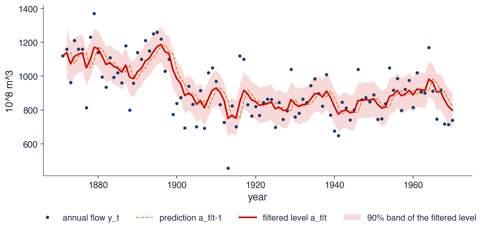

Capitolul 10: Modele în spațiul stărilor, filtrul Kalman și modele Markov switching
Daniel Traian PELE
Academia de Studii Economice din București IDA Institute Digital Assets Blockchain Research Center AI4EFin Artificial Intelligence for Energy Finance Academia Română, Institutul de Prognoză Economică MSCA Digital Finance
Capitolul întreabă cum se măsoară o mărime care nu se observă direct: nivelul real al unei serii zgomotoase, deviația PIB de la potențial, un coeficient beta care se schimbă în timp sau o recesiune. Răspunsul comun este să scriem mărimea neobservată ca o stare și să lăsăm fiecare observație nouă să corecteze estimarea ei. Estimarea se construiește recursiv: la fiecare perioadă, vechea estimare și noua observație se combină într-o estimare actualizată.
Traseul are patru etape. Prima definește forma în spațiul stărilor și arată că modelele local level, local linear trend, ARMA și regresia cu parametri variabili sînt cazuri particulare ale ei. A doua construiește filtrul Kalman, îl aplică de mînă și îl folosește pentru netezire, verosimilitate, valori lipsă și prognoză. A treia aplică metoda trendului și ciclului PIB-ului României, discută filtrul Hodrick–Prescott și introduce factorii dinamici. A patra trece la regimuri discrete, cu modelele Markov switching. Capitolul se sprijină pe netezirea exponențială din Capitolul 0, pe modelele ARMA din Capitolul 2, pe modelele GARCH din Capitolul 5 și pe memoria lungă din Capitolul 8.
Pe scurt
Întrebarea: cum măsurăm ceea ce nu observăm direct: nivelul real al unei serii zgomotoase, deviația PIB de la potențial, un beta care se schimbă, o recesiune?
răspunsul: scriem mărimea neobservată ca o stare și lăsăm datele să ne actualizeze estimarea ei, perioadă cu perioadă
Traseul capitolului
forma în spațiul stărilor: ecuația de măsurare și ecuația de tranziție; local level, local linear trend, ARMA, regresie cu parametri variabili
filtrul Kalman de mînă; netezirea; verosimilitatea și estimarea; valorile lipsă
trend și ciclu: PIB-ul României, filtrul HP și critica lui; factori dinamici și nowcasting
Markov switching: recesiuni, regimuri ale creșterii economice din România, regimuri de volatilitate
Primele rezultate sînt de modelare și de calcul. Cititorul trebuie să poată scrie un model în forma în spațiul stărilor, adică să aleagă vectorul de stare și matricele sistemului pentru un local level, un local linear trend, un AR(2) sau o regresie cu un coeficient variabil. Trebuie apoi să poată aplica de mînă filtrul Kalman pe cîteva perioade, să explice cum cîștigul Kalman împarte o surpriză între semnal și zgomot și să arate că netezirea exponențială simplă este filtrul Kalman de echilibru al modelului local level.
Rezultatele empirice privesc estimarea și interpretarea. Cititorul estimează varianțele unui model prin verosimilitate maximă, deosebește estimarea filtrată de cea netezită, tratează valorile lipsă și construiește prognoze cu intervale. Descompune PIB-ul în trend și ciclu, compară filtrul Hodrick–Prescott cu alternativele lui și înțelege critica lui Hamilton (2018). În final, estimează un model Markov switching și interpretează probabilitățile regimurilor, duratele lor așteptate și capcanele estimării.
Pe scurt
Scrieți un model în forma în spațiul stărilor: local level, local linear trend, AR(2), o regresie cu un coeficient variabil în timp
Aplicați de mînă filtrul Kalman și explicați cîștigul Kalman
Arătați că netezirea exponențială simplă este starea de echilibru a filtrului pentru modelul local level
Estimați un model în spațiul stărilor prin verosimilitate maximă, netezați-l și tratați valorile lipsă și prognozele
Descompuneți PIB-ul în trend și ciclu și evaluați filtrul HP prin prisma criticii lui Hamilton (2018)
Estimați un model Markov switching și interpretați probabilitățile regimurilor, duratele și capcanele lui
Manualul cursului este Huang și Petukhina (2022), al cărui capitol despre modelele în spațiul stărilor și filtrul Kalman acoperă prima parte a materialului. Referința standard pentru metodele în spațiul stărilor este Durbin și Koopman (2012), din care provine și exemplul Nilului folosit în tot capitolul; Harvey (1989) dezvoltă modelele structurale de serii de timp, iar Shumway și Stoffer (2017), capitolul 6, oferă o prezentare mai statistică. Pentru schimbările de regim, lucrarea de bază este Hamilton (1989);Hamilton (1994) tratează filtrul Kalman în capitolul 13 și schimbările de regim în capitolul 22, iar Kim și Nelson (1999) combină cele două teme.
Calculele se fac în Python. Un filtru Kalman scris explicit în numpy arată fiecare pas al algoritmului, iar biblioteca statsmodels oferă implementările de producție: UnobservedComponents pentru modelele trend–ciclu, SARIMAX pentru modelele ARIMA, DynamicFactor pentru factorii dinamici, MarkovRegression și MarkovAutoregression pentru modelele cu schimbare de regim. Quantlet-urile capitolului reproduc fiecare grafic, iar notebook-ul cursului rulează în Google Colab.
Multe dintre mărimile care contează în economie și finanțe nu se observă direct. Nivelul „adevărat” al unei serii zgomotoase, producția potențială a unei economii, sensibilitatea unei burse față de alta sau faptul că economia se află într-o recesiune sînt mărimi pe care le deducem din date, nu le citim din date. Statisticile publicate sînt măsurători imperfecte ale acestor mărimi: conțin zgomot, sosesc cu întîrziere și se revizuiesc.
Acest capitol tratează mărimea neobservată ca pe o stare (state) care evoluează în timp după o lege cunoscută, iar datele ca pe măsurători zgomotoase ale ei. Forma în spațiul stărilor (state space form) scrie ambele relații într-un cadru comun, iar filtrul Kalman actualizează estimarea stării perioadă cu perioadă, pe măsură ce sosesc observațiile. Același cadru include modelele ARMA din Capitolul 2, netezirea exponențială din Capitolul 0, modelele trend–ciclu, regresiile cu coeficienți variabili și modelele cu factori comuni.
Ultima parte a capitolului trece la o stare discretă: un regim, cum ar fi recesiunea sau expansiunea, piața calmă sau piața agitată. Modelele Markov switching ale lui Hamilton (1989) estimează în fiecare perioadă probabilitatea fiecărui regim. Aplicațiile folosesc debitul Nilului, PIB-ul României și al SUA, indicele BET și indicele S&P 500.

Debitul anual al Nilului la Aswan, 1871–1970, în \(10^8\) m³ (puncte), predicția la un pas \(a_t\) (linie întreruptă), nivelul filtrat \(a_{t|t}\) al modelului local level (linie continuă) și banda de 90% a nivelului filtrat.
Ce veți putea face
Scrieți un model în forma în spațiul stărilor: local level, local linear trend, AR(2) și o regresie cu un coeficient variabil în timp.
Aplicați de mînă filtrul Kalman și explicați rolul cîștigului Kalman.
Arătați că netezirea exponențială simplă este starea de echilibru a filtrului pentru modelul local level.
Estimați un model în spațiul stărilor prin verosimilitate maximă, netezați-l și tratați valorile lipsă și prognozele.
Descompuneți PIB-ul în trend și ciclu și evaluați filtrul Hodrick–Prescott prin prisma criticii lui Hamilton (2018).
Estimați un model Markov switching și interpretați probabilitățile regimurilor, duratele și capcanele lui.
Planul capitolului
Stări ascunseDe la navigația misiunilor Apollo la mărimile neobservate din economie și finanțe.
Forma în spațiul stărilorEcuația de măsurare și ecuația de tranziție; local level, local linear trend, ARMA, regresia cu parametri variabili.
Filtrul KalmanPredicția și actualizarea, cîștigul Kalman, un exemplu de mînă și legătura cu netezirea exponențială.
Netezire, verosimilitate și valori lipsăNetezitorul Rauch–Tung–Striebel, verosimilitatea din erorile de predicție, diagnosticarea, golurile din date și prognoza.
Trend, ciclu și factori comuniModele cu componente neobservate, filtrul HP și critica lui, deviația PIB a României, un beta variabil și un factor comun.
Modele Markov switchingLanțuri Markov, filtrul Hamilton, recesiunile din SUA, regimurile din România și regimurile de volatilitate.
RezumatIdeile principale, formulele și întrebările de autoevaluare.
Stări ascunse
O stare ascunsă (hidden state) este o mărime care determină comportamentul datelor, dar nu apare ea însăși în date. Ideea vine din ingineria sistemelor de control, unde poziția și viteza unei nave se deduc din măsurători imperfecte. Secțiunea prezintă originea filtrului Kalman și apoi inventarul stărilor ascunse pe care le vom estima în capitol: nivelul unei serii, trendul și ciclul PIB, un coeficient beta, un factor comun și un regim.
Kalman (1960) a propus o metodă recursivă de estimare a unei stări ascunse din măsurători zgomotoase. Metoda alternează doi pași. Întîi, modelul dinamic prezice unde ar trebui să fie starea în perioada următoare. Apoi sosește o nouă măsurătoare, iar predicția se corectează cu o parte din diferența dintre măsurătoare și ce prevedea modelul. Ponderea acestei corecții se numește cîștigul Kalman (Kalman gain) și echilibrează două surse de incertitudine: cît de nesigură este predicția modelului și cît de zgomotoasă este măsurătoarea.
Prima utilizare de amploare a fost în navigația spațială. La centrul NASA Ames, filtrul a fost adaptat pentru navigația navelor Apollo: starea era poziția și viteza navei, iar măsurătorile erau observații ale stelelor și date radar. Fotografia din 1968 îl arată pe Jim Lovell la stația de ghidare și navigație a misiunii Apollo 8.
În economie, logica este aceeași, dar starea are alt înțeles. Ea poate fi trendul sau ciclul unei serii, un coeficient de regresie care se schimbă sau regimul în care se află economia, iar măsurătorile sînt datele publicate. Ca și în navigație, nicio măsurătoare luată separat nu dezvăluie starea; o dezvăluie combinația dintre model și succesiunea măsurătorilor.
Tabelul pune alături seria observată, starea ascunsă și modelul folosit în acest capitol. Debitul anual al Nilului și inflația lunară au un nivel de fond care se schimbă lent, acoperit de fluctuații de la o perioadă la alta; modelul este local level. PIB-ul real conține un trend și o deviație de la trend, estimate cu un model cu componente neobservate. Randamentele unui indice bursier depind de randamentele altei piețe printr-un coeficient beta care se poate schimba în timp, modelat cu o regresie cu parametri variabili. Mai mulți indicatori de activitate economică au în comun un factor neobservat, estimat cu un model cu factori dinamici. Creșterea PIB și randamentele bursiere trec prin regimuri, recesiune sau expansiune, calm sau agitat, descrise de modelele Markov switching.
Diferența esențială dintre primele patru exemple și ultimul este natura stării. În primele patru, starea este continuă: un nivel, un trend sau un coeficient poate lua orice valoare reală. Pentru o stare continuă cu dinamică liniară și erori gaussiene, filtrul optim este filtrul Kalman. În ultimul exemplu, starea este discretă: economia se află fie într-un regim, fie în celălalt. Pentru o stare discretă cu evoluție de tip lanț Markov, filtrul corespunzător este filtrul Hamilton.
Cele două filtre au aceeași structură. Fiecare prezice starea de azi din informația de ieri, apoi actualizează predicția folosind observația de azi \(y_t\). Filtrul Kalman transportă o medie și o varianță; filtrul Hamilton transportă o probabilitate pentru fiecare regim.
Pe scurt
Seria observată
Starea ascunsă
Modelul din acest capitol
Debitul Nilului, inflația lunară
nivelul de fond
local level
PIB real
trendul și deviația PIB
componente neobservate
randamentele unui indice bursier
un beta variabil în timp
regresie cu parametri variabili
mai mulți indicatori de activitate
un factor comun
model cu factori dinamici
creșterea PIB, randamentele
recesiune sau expansiune; calm sau agitat
Markov switching
Primele patru au o stare continuă și sînt filtrate cu filtrul Kalman
Ultimul are o stare discretă (un regim) și este filtrat cu filtrul Hamilton
Ambele filtre fac același lucru: prezic starea, apoi actualizează predicția cu \(y_t\)
Sinteza secțiunii
Mărimile pe care le vom estima sînt stări ascunse: un nivel, un trend, o deviație, un coeficient, un factor sau un regim. Toate se tratează la fel, printr-un model al evoluției stării, un model al legăturii dintre stare și date și un filtru care alternează predicția cu actualizarea. Stările continue se filtrează cu filtrul Kalman, iar stările discrete cu filtrul Hamilton.
Forma în spațiul stărilor
Forma în spațiul stărilor scrie un model de serii de timp prin două ecuații: o ecuație care spune cum generează starea datele și o ecuație care spune cum evoluează starea. Secțiunea definește forma generală, apoi construiește pe rînd modelele local level și local linear trend, scrie modelele ARMA și regresia cu parametri variabili în această formă și arată legătura cu netezirea exponențială. Toate aceste modele diferă doar prin alegerea matricelor sistemului.
Prima este ecuația de măsurare (measurement equation). Ea leagă observația \(y_t\), aici un scalar, de vectorul de stare (state vector) \(\alpha_t\), de dimensiune \(m \times 1\), care nu se observă. Rîndul \(Z_t\), de dimensiune \(1 \times m\), conține numere cunoscute care spun ce combinație a stării se măsoară, iar \(\varepsilon_t\) este zgomotul de măsurare, cu varianța \(H\). A doua este ecuația de tranziție (transition equation): starea evoluează ca o autoregresie vectorială de ordinul 1, VAR(1), de tipul celor din Capitolul 6, cu matricea \(T\) de dimensiune \(m \times m\). Matricea \(R\) spune cum intră șocurile stării \(\eta_t\) în fiecare componentă a stării, iar \(Q\) este matricea lor de varianță.
Modelul se completează cu starea inițială, \(\alpha_1 \sim N(a_1, P_1)\), unde \(a_1\) și \(P_1\) sînt media și varianța ei, și cu ipoteza că \(\varepsilon_t\),\(\eta_s\) și \(\alpha_1\) sînt independente între ele. Matricele sistemului \(Z_t\),\(H\),\(T\),\(R\) și \(Q\) depind de un vector de parametri \(\theta\), de obicei varianțe și coeficienți autoregresivi, care se estimează prin verosimilitate maximă.
Avantajul acestei forme este generalitatea ei. Aceleași două ecuații, cu alte matrice, descriu modelele ARMA, netezirea exponențială, modelele trend–ciclu, regresiile cu coeficienți mobili și modelele factoriale (Durbin și Koopman, 2012). Odată scris un model în această formă, același filtru Kalman calculează estimarea stării, verosimilitatea, prognozele și valorile lipsă.
\(y_t\): observația (aici un scalar); \(\alpha_t\): vectorul de stare (\(m \times 1\)), neobservat; \(Z_t\): un rînd \(1 \times m\) de numere cunoscute
starea evoluează ca o autoregresie vectorială de ordinul 1 (VAR(1), Capitolul 6); \(T\) este \(m \times m\)
\(R\): transmite șocurile \(\eta_t\) în stare; \(H\), \(Q\): varianțele șocurilor de măsurare și ale șocurilor stării
starea inițială: \(\alpha_1 \sim N(a_1, P_1)\), \(a_1\), \(P_1\): media și varianța ei; \(\varepsilon_t\), \(\eta_s\) și \(\alpha_1\) sînt independente între ele
Matricele sistemului\(Z_t, H, T, R, Q\) conțin parametrii \(\theta\); aceștia se estimează prin verosimilitate maximă
aceeași formă acoperă ARMA, netezirea exponențială, modelele trend–ciclu, regresiile cu coeficienți mobili și modelele factoriale Durbin și Koopman (2012)
Starea este nivelul \(\mu_t\), iar toate matricele sînt scalari: \(Z = T = R = 1\),\(H = \sigma^2_\varepsilon\) și \(Q = \sigma^2_\eta\). Cele două șocuri au roluri diferite. Șocul de măsurare \(\varepsilon_t\) afectează doar observația curentă și dispare în perioada următoare. Șocul de nivel \(\eta_t\) mută nivelul permanent, deoarece nivelul este un mers aleator.
Raportul semnal–zgomot (signal-to-noise ratio) \(q = \sigma^2_\eta/\sigma^2_\varepsilon\) măsoară cîtă parte din mișcarea seriei este permanentă. Pentru \(q = 0\), nivelul este constant, iar seria este un zgomot alb în jurul unei medii. Cînd \(q\) crește fără limită, zgomotul de măsurare devine neglijabil, iar seria este un mers aleator pur. Între aceste extreme, seria are un nivel care se mișcă, observat printr-un zgomot.
Forma redusă (reduced form) a modelului arată legătura cu modelele ARIMA. Diferența întîi este \(\Delta y_t = \eta_{t-1} + \varepsilon_t - \varepsilon_{t-1}\), o sumă de zgomote albe care nu are autocorelații dincolo de lagul 1, deci un proces MA(1). Varianța ei este \(\gamma(0) = \sigma^2_\eta + 2\sigma^2_\varepsilon\), iar autocovarianța de ordinul 1 este \(\gamma(1) = -\sigma^2_\varepsilon\), deoarece \(\varepsilon_{t-1}\) apare în \(\Delta y_t\) cu semnul minus și în \(\Delta y_{t-1}\) cu semnul plus. Rezultă \(\rho(1) = -1/(q+2)\), o valoare între \(-1/2\) și 0. Modelul local level este deci un ARIMA(0,1,1), de tipul celor din Capitolul 3, cu un coeficient MA negativ.
Pe scurt
Local level (mers aleator plus zgomot): \(y_t = \mu_t + \varepsilon_t\), \(\mu_{t+1} = \mu_t + \eta_t\)
starea \(\alpha_t = \mu_t\), nivelul; \(Z = T = R = 1\), \(H = \sigma^2_\varepsilon\), \(Q = \sigma^2_\eta\)
\(\varepsilon_t\): zgomot de măsurare care dispare în perioada următoare; \(\eta_t\): o deplasare permanentă a nivelului
Raportul semnal–zgomot\(q = \sigma^2_\eta/\sigma^2_\varepsilon\): cîtă parte din mișcare este permanentă
\(q = 0\): un nivel constant (zgomot alb în jurul unei medii); \(q \to \infty\): un mers aleator pur
Forma redusă: \(\Delta y_t = \eta_{t-1} + \varepsilon_t - \varepsilon_{t-1}\) este un MA(1) cu \(\rho(1) = -1/(q+2)\)
deci modelul local level este un ARIMA(0,1,1) (Capitolul 3) cu un coeficient MA negativ
\(\gamma(0) = \sigma^2_\eta + 2\sigma^2_\varepsilon\) și \(\gamma(1) = -\sigma^2_\varepsilon\) dau \(\rho(1)\)
Întrebare pentru sală Cît este F1, varianța primei erori de predicție a filtrului pentru AR(2)?
Răspuns
0,858 = γ(0), varianța staționară a AR(2), elementul (1,1) al lui P1. F2 = 0,748, iar din t = 3, cu două laguri cunoscute, Ft = σ̂² = 0,739. Un model staționar nu are nevoie de pornire difuză.
Întrebare pentru sală Cu T = 200, care traiectorie are autocorelația de ordinul 1 a lui Δyt cea mai apropiată de −0,5?
Răspuns
Cea cu q = 0,01: −0,51 (teoretic −1/2,01 = −0,50); pentru q = 1 autocorelația este −0,28 (teoretic −1/3). Cînd zgomotul domină, Δyt ≈ εt − εt−1, un MA(1) cu ρ(1) = −1/2; prima diferență a unui mers aleator fără zgomot ar fi necorelată.
Panoul din stînga simulează trei modele local level cu aceleași șocuri standard \(\varepsilon_t\) și \(\eta_t\), cu \(\sigma^2_\varepsilon = 1\) și cu raportul semnal–zgomot \(q\) egal cu 0,01, 0,1 și 1. Liniile subțiri sînt observațiile \(y_t\), iar liniile groase sînt nivelurile \(\mu_t\). Deoarece șocurile sînt aceleași, diferențele dintre traiectorii provin doar din valoarea lui \(q\).
Pentru \(q = 0{,}01\) (albastru), nivelul rămîne aproape de 10 pe toată durata simulării, iar observațiile fluctuează în jurul lui. Pentru \(q = 1\) (roșu), nivelul rătăcește între aproximativ 2 și 23, iar observațiile îl urmează îndeaproape. Valoarea intermediară \(q = 0{,}1\) (verde) dă un nivel care se mișcă vizibil, dar mult mai puțin decît zgomotul din jurul lui.
Panoul din dreapta arată un model local linear trend, definit în frame-ul următor. Linia portocalie este nivelul \(\mu_t\), linia violet sînt observațiile, iar linia întreruptă este panta \(\beta_t\), citită pe axa din dreapta. Panta este ea însăși un mers aleator, așa că rata de creștere a nivelului se schimbă lent: nivelul crește repede cînd panta este mare, în jurul perioadei 35, și aproape stagnează cînd panta se apropie de zero, în jurul perioadei 100.
Pe scurt
Stînga: aceleași șocuri \(\varepsilon_t, \eta_t \sim N(0, 1)\), cu \(\sigma^2_\varepsilon = 1\) și \(q = 0{,}01;\ 0{,}1;\ 1\) (subțire: \(y_t\), gros: \(\mu_t\)). Dreapta: un local linear trend, a cărui pantă \(\beta_t\) este ea însăși un mers aleator
Simulările arată ce înseamnă \(q\) pentru aspectul unei serii. Cu \(q\) mic, nivelul abia se mișcă, iar seria arată ca un zgomot în jurul unei medii. Cu \(q\) mare, nivelul domină, iar seria seamănă cu un mers aleator. Forma redusă din frame-ul anterior se verifică pe simulări: autocorelația de ordinul 1 a primei diferențe este −0,51 pentru \(q = 0{,}01\), aproape de valoarea teoretică \(-1/2{,}01 = -0{,}50\), și −0,28 pentru \(q = 1\), aproape de valoarea teoretică \(-1/3\).
Modelul local linear trend produce perioade de creștere rapidă și de creștere lentă, deoarece panta lui se schimbă lent. Acesta este tipul de trend pe care îl vom folosi pentru PIB-ul României: o economie nu crește cu o rată constantă, dar nici nu își schimbă rata de creștere brusc de la un trimestru la altul.
Simulările pun și problema centrală a capitolului. Cînd generăm datele, știm care parte a fiecărei observații este nivel și care este zgomot. În practică vedem doar \(y_t\). Filtrul Kalman răspunde la întrebarea „cît din mișcarea observată este nivel?” atunci cînd varianțele sînt date, iar verosimilitatea alege varianțele care descriu cel mai bine datele.
Pe scurt
\(q\) mic: nivelul abia se mișcă, iar \(y_t\) arată ca un zgomot în jurul unei medii; \(q\) mare: nivelul rătăcește, iar \(y_t\) îl urmează
autocorelația primei diferențe: \(-\)0,51 pentru \(q = 0{,}01\) (teoretic \(-1/2{,}01\)) și \(-\)0,28 pentru \(q = 1\) (teoretic \(-1/3\))
Local linear trend are o pantă care se schimbă lent: perioade de creștere rapidă și lentă
acesta este modelul de trend pe care îl vom folosi pentru PIB
Problema de estimare: doar din \(y_t\), cît este nivel și cît este zgomot? Filtrul Kalman răspunde pentru varianțe date; verosimilitatea alege varianțele
Starea are acum două componente, \(\alpha_t = (\mu_t, \beta_t)'\): nivelul și panta, adică rata de creștere pe perioadă. Ecuația de măsurare citește doar nivelul, deci \(Z = (1,\ 0)\). Matricea de tranziție \(T\) are pe primul rînd \((1,\ 1)\), deoarece nivelul de mîine este nivelul de azi plus panta de azi, și pe al doilea rînd \((0,\ 1)\), deoarece panta de mîine este panta de azi plus un șoc. Șocurile nivelului și ale pantei sînt independente, cu \(Q = \mathrm{diag}(\sigma^2_\eta, \sigma^2_\zeta)\).
Trei cazuri particulare leagă modelul de capitolele anterioare. Dacă ambele varianțe ale stării sînt zero, nivelul și panta sînt fixe, iar trendul este liniar și determinist, \(\mu_1 + \beta_1 t\), ca în Capitolul 3. Dacă doar \(\sigma^2_\zeta = 0\), panta este constantă, iar nivelul este un mers aleator cu derivă \(\beta\). Dacă doar \(\sigma^2_\eta = 0\), nivelul nu primește șocuri proprii, iar trendul își schimbă doar panta; acesta este trendul neted (smooth trend), numit și mers aleator integrat, modelul din spatele filtrului Hodrick–Prescott din secțiunea 5.
Prognoza modelului prelungește ultima estimare a nivelului cu ultima estimare a pantei: \(\hat y_{T+h} = \hat\mu_T + h\hat\beta_T\). Este versiunea în spațiul stărilor a metodei Holt din Capitolul 0, cu diferența că ponderile de netezire nu se aleg ad-hoc, ci rezultă din varianțele estimate.
Pe scurt
Local linear trend: \(y_t = \mu_t + \varepsilon_t\), \(\mu_{t+1} = \mu_t + \beta_t + \eta_t\), \(\beta_{t+1} = \beta_t + \zeta_t\)
starea \(\alpha_t = (\mu_t, \beta_t)'\): nivelul și panta (rata de creștere)
Orice model ARMA se poate scrie în forma în spațiul stărilor. Pentru un AR(2), \(y_t = \phi_1y_{t-1} + \phi_2y_{t-2} + u_t\), starea reține ultimele două valori, \(\alpha_t = (y_t, y_{t-1})'\). Ecuația de măsurare citește prima componentă, \(y_t = (1,\ 0)\,\alpha_t\), fără zgomot de măsurare (\(H = 0\)). Ecuația de tranziție este
Primul rînd reproduce ecuația AR(2), iar al doilea doar mută \(y_t\) în poziția „valoarea de ieri”. Matricea \(T\) este matricea companion din Capitolul 2; valorile ei proprii sînt inversele rădăcinilor polinomului AR, deci procesul este staționar exact cînd valorile proprii sînt în interiorul cercului unitate.
Pentru un ARMA(1,1), \(y_t = \phi y_{t-1} + u_t + \theta u_{t-1}\), o alegere convenabilă a stării este \(\alpha_t = (y_t, \theta u_t)'\), cu \(T\) avînd rîndurile \((\phi,\ 1)\) și \((0,\ 0)\) și cu \(R = (1,\ \theta)'\). Primul rînd dă \(y_{t+1} = \phi y_t + \theta u_t + u_{t+1}\), exact ecuația ARMA(1,1). În general, un ARMA\((p,q)\) are nevoie de o stare de dimensiune \(m = \max(p, q+1)\).
Importanța practică este că filtrul Kalman calculează verosimilitatea gaussiană exactă a unui model ARMA, chiar și cu valori lipsă. Pentru aceasta, starea inițială pornește din distribuția staționară: \(P_1\) rezolvă ecuația \(P = TPT' + RQR'\), cu soluția \(\mathrm{vec}(P_1) = (I - T \otimes T)^{-1}\mathrm{vec}(RQR')\), unde \(\mathrm{vec}\) așază coloanele unei matrice una sub alta, iar \(\otimes\) este produsul Kronecker. Așa estimează SARIMAX din statsmodels modelele ARIMA din Capitolele 2–4.
Exemplul folosește creșterea trimestrială a PIB-ului real al SUA, trimestru față de trimestru, din 1947 pînă în 2019, adică \(T = 291\) de observații din baza de date FRED (Federal Reserve Economic Data). Un AR(2) cu termen liber, estimat cu SARIMAX, dă \(\hat\phi_1 = 0{,}319\),\(\hat\phi_2 = 0{,}111\) și varianța șocurilor \(\hat\sigma^2 = 0{,}739\). Media implicată a creșterii este \(\hat\mu = 0{,}774\%\) pe trimestru, adică aproximativ 3,1% pe an.
Același model se poate trece prin filtrul Kalman scris explicit, cu matricele din frame-ul anterior și cu varianța inițială \(P_1\) staționară. Log-verosimilitatea calculată de acest filtru este −368,9157, iar cea raportată de SARIMAX este tot −368,9157. Coincidența nu este întîmplătoare: SARIMAX calculează verosimilitatea exact prin acest mecanism.
Erorile de predicție \(v_t\) ale filtrului sînt chiar erorile de prognoză la un pas ale modelului AR(2): diferența dintre creșterea observată în trimestrul \(t\) și prognoza ei din trimestrul anterior. Secțiunea 4 arată cum se construiește verosimilitatea din aceste erori și din varianțele lor.
Pe scurt
Date: creșterea PIB real al SUA, trimestru față de trimestru, 1947–2019 (\(T = 291\), FRED GDPC1)
AR(2) cu termen liber estimat cu SARIMAX: \(\hat\phi_1 = 0{,}319\), \(\hat\phi_2 = 0{,}111\), \(\hat\sigma^2 = 0{,}739\), media \(\hat\mu = 0{,}774\%\) pe trimestru
Filtrul nostru, cu matricele din slide-ul anterior și cu \(P_1\) staționar
log-verosimilitatea: Kalman \(-\)368,9157; SARIMAX\(-\)368,9157: același număr
Erorile de predicție \(v_t\) ale filtrului sînt erorile de prognoză la un pas ale AR(2); verosimilitatea se construiește din ele (secțiunea 4)
O regresie obișnuită presupune că efectul lui \(x_t\) asupra lui \(y_t\) este același în toată perioada. Regresia cu parametri variabili în timp (time-varying parameter regression, TVP) renunță la această ipoteză și lasă coeficientul să evolueze ca un mers aleator:
Starea este \((\alpha, \beta_t)'\). Noutatea față de modelele anterioare este că rîndul de măsurare \(Z_t = (1,\ x_t)\) se schimbă în timp, deoarece conține regresorul. Matricea de varianță a stării este \(Q = \mathrm{diag}(0, \sigma^2_\eta)\): interceptul este fix, iar coeficientul se mișcă. Dacă \(\sigma^2_\eta = 0\), coeficientul este constant, iar filtrul Kalman calculează recursiv estimatorul celor mai mici pătrate (ordinary least squares, OLS), actualizîndu-l cu fiecare observație nouă.
Exemplele economice sînt numeroase: un beta de piață care crește în crize, transmiterea cursului de schimb în inflație care se schimbă odată cu regimul monetar, persistența inflației care scade după adoptarea țintirii inflației. Alternativa obișnuită este o regresie pe ferestre mobile (rolling window). Regresia TVP este superioară din trei motive: nu cere alegerea arbitrară a lungimii ferestrei, folosește toate observațiile, cu ponderi stabilite de verosimilitate, și dă pentru fiecare \(\beta_t\) o eroare standard.
Pe scurt
Regresia cu parametri variabili în timp (TVP): \(y_t = \alpha + \beta_t x_t + \varepsilon_t\), \(\beta_{t+1} = \beta_t + \eta_t\)
Capitolul 0 a introdus netezirea exponențială simplă (simple exponential smoothing, SES): un nivel \(\ell_t\) se actualizează cu regula \(\ell_t = \alpha y_t + (1-\alpha)\ell_{t-1}\), iar prognoza pentru perioada următoare este \(\hat y_{t+1} = \ell_t\). Rescrisă ca \(\ell_t = \ell_{t-1} + \alpha(y_t - \ell_{t-1})\), regula spune că noul nivel este vechiul nivel plus o fracțiune \(\alpha\) din surpriză, adică din diferența dintre observație și prognoză.
Aceasta este exact forma unei actualizări Kalman. Muth (1960) a arătat că SES dă prognozele optime atunci cînd datele urmează modelul local level. Secțiunea 3 arată că ponderea \(\alpha\) este cîștigul Kalman de echilibru al acestui model, deci că alegerea lui \(\alpha\) echivalează cu o ipoteză despre raportul semnal–zgomot.
Modelele ETS (eroare, trend, sezonalitate) ale lui Hyndman et al. (2008) sînt tot modele în spațiul stărilor, dar cu o singură sursă de eroare: același șoc intră în observație și în toate componentele. Modelele din acest capitol au șocuri separate pentru fiecare componentă, cum sînt \(\varepsilon_t\) și \(\eta_t\) în modelul local level. Ambele familii dau aceleași prognoze punctuale în cazurile simple, dar diferă prin interpretarea componentelor și prin modul de estimare.
Pe scurt
Capitolul 0: netezirea exponențială simplă (SES) actualizează un nivel \(\ell_t = \alpha y_t + (1-\alpha)\ell_{t-1}\) și prognozează \(\hat y_{t+1} = \ell_t\)
echivalent \(\ell_t = \ell_{t-1} + \alpha(y_t - \ell_{t-1})\): nivelul vechi plus o fracțiune \(\alpha\) din surpriză
Muth (1960): SES dă prognozele optime atunci cînd datele urmează modelul local level
secțiunea 3 o arată: \(\alpha\) este cîștigul Kalman de echilibru
Modelele ETS (eroare, trend, sezonalitate) sînt modele în spațiul stărilor cu o singură sursă de eroare Hyndman et al. (2008); modelele de aici au șocuri separate pentru fiecare componentă
Forma în spațiul stărilor (10.1) descrie o stare ascunsă care urmează un VAR(1) și este observată cu zgomot. În modelul local level, raportul \(q = \sigma^2_\eta/\sigma^2_\varepsilon\) fixează cît din mișcare este permanentă, iar forma redusă este un ARIMA(0,1,1). Modelul local linear trend, modelele ARMA și regresia TVP sînt alte alegeri ale matricelor \(Z_t\),\(T\) și \(Q\). Verosimilitatea calculată cu filtrul Kalman pentru un AR(2) este egală cu verosimilitatea ARMA exactă.
Pe scurt
\(y_t = Z_t\alpha_t + \varepsilon_t\), \(\alpha_{t+1} = T\alpha_t + R\eta_t\): un VAR(1) ascuns, observat cu zgomot
Local level: \(q = \sigma^2_\eta/\sigma^2_\varepsilon\); forma redusă ARIMA(0,1,1)
Local linear trend, ARMA și regresia TVP sînt alte alegeri ale lui \(Z_t, T, Q\)
Verosimilitatea Kalman a unui AR(2) este egală cu verosimilitatea ARMA exactă
Sinteza secțiunii
Forma în spațiul stărilor reduce o mare varietate de modele la aceeași pereche de ecuații. Local level separă un nivel permanent de zgomotul tranzitoriu, local linear trend adaugă o rată de creștere care se schimbă lent, modelele ARMA intră prin matricea companion, iar regresia TVP lasă un coeficient să se miște. Netezirea exponențială este, la rîndul ei, regula de actualizare a unui model local level. Pasul următor este algoritmul care estimează starea în toate aceste modele: filtrul Kalman.
Filtrul Kalman
Filtrul Kalman calculează, perioadă cu perioadă, cea mai bună estimare a stării pe baza observațiilor de pînă atunci și incertitudinea acestei estimări. Secțiunea prezintă ideea filtrului, formulele celor doi pași, rolul cîștigului Kalman, un exemplu calculat de mînă și starea de echilibru, care leagă filtrul de netezirea exponențială. Aplicația este debitul Nilului.
Notăm cu \(Y_t = (y_1, \dots, y_t)\) toate observațiile pînă la momentul \(t\). Filtrul urmărește două estimări ale stării. Predicția (prediction) \(a_t = E(\alpha_t \mid Y_{t-1})\) este estimarea stării de azi folosind datele pînă ieri, cu matricea de varianță \(P_t\). Estimarea filtrată (filtered estimate) \(a_{t|t} = E(\alpha_t \mid Y_t)\) folosește și observația de azi, cu varianța \(P_{t|t}\).
Fiecare perioadă are doi pași. În pasul de actualizare (update), sosește \(y_t\), iar predicția \(a_t\) se corectează cu o fracțiune din surpriză, adică din eroarea de predicție \(v_t = y_t - Z_ta_t\). În pasul de predicție, estimarea filtrată trece prin ecuația de tranziție și dă predicția pentru perioada următoare, \(a_{t+1}\). Ciclul se repetă pînă la sfîrșitul eșantionului.
Dacă erorile sînt gaussiene, \(a_{t|t}\) este media condiționată exactă a stării, deci cea mai bună estimare în sensul erorii pătratice medii. Fără ipoteza de normalitate, filtrul rămîne cea mai bună estimare liniară în date (Durbin și Koopman, 2012). Filtrul are nevoie de un punct de pornire, \(a_1\) și \(P_1\). Pentru o stare staționară se folosește distribuția staționară. Pentru o stare nestaționară, cum este nivelul unui mers aleator, se folosește o pornire difuză (diffuse initialisation): \(P_1\) foarte mare, ceea ce înseamnă că nu știm nimic despre starea inițială, iar prima observație determină aproape în întregime estimarea.
Pe scurt
Notație: \(Y_t = (y_1, \dots, y_t)\); urmărim două mărimi (vectori) pentru stare
predicția: \(a_t = E(\alpha_t \mid Y_{t-1})\), cu varianța \(P_t\)
estimarea filtrată: \(a_{t|t} = E(\alpha_t \mid Y_t)\), cu varianța \(P_{t|t}\)
Fiecare perioadă are doi pași
actualizarea: sosește \(y_t\); corectăm \(a_t\) cu o fracțiune din surpriza \(v_t = y_t - Z_ta_t\)
predicția: trecem starea filtrată prin ecuația de tranziție și obținem \(a_{t+1}\)
Cu erori gaussiene, \(a_{t|t}\) este media condiționată exactă; fără normalitate rămîne cea mai bună estimare liniarăDurbin și Koopman (2012)
Pornirea: \(a_1, P_1\); pentru o stare nestaționară folosim o pornire difuză (\(P_1\) foarte mare: nu știm nimic)
Eroarea de predicție \(v_t\) are varianța \(F_t\), care adună incertitudinea despre stare, \(Z_tP_tZ_t'\), și zgomotul de măsurare, \(H\). Cîștigul Kalman \(K_t\) transformă surpriza într-o corecție a stării, iar varianța stării scade după observație. Pasul de predicție trece apoi starea filtrată prin ecuația de tranziție:
Pentru modelul local level, toate mărimile sînt scalari: \(F_t = P_t + \sigma^2_\varepsilon\),\(K_t = P_t/(P_t + \sigma^2_\varepsilon)\), iar cei doi pași se combină în \(a_{t+1} = a_t + K_t(y_t - a_t)\) și \(P_{t+1} = P_t(1 - K_t) + \sigma^2_\eta\). Nivelul prezis pentru mîine este nivelul prezis pentru azi plus o fracțiune \(K_t\) din surpriza de azi. Dacă \(y_t\) lipsește, pasul de actualizare se omite, \(a_{t|t} = a_t\) și \(P_{t|t} = P_t\), iar filtrul trece direct la predicție.
Pe scurt
Actualizarea (cînd \(y_t\) este observat)
eroarea de predicție \(v_t = y_t - Z_ta_t\), cu varianța \(F_t = Z_tP_tZ_t' + H\)
În modelul local level, cîștigul \(K_t = P_t/(P_t + \sigma^2_\varepsilon)\) este un număr între 0 și 1, iar estimarea filtrată se poate scrie ca o medie ponderată: \(a_{t|t} = (1 - K_t)\,a_t + K_t\,y_t\). Cîștigul este ponderea pe care o primește observația nouă, iar \(1 - K_t\) este ponderea predicției modelului.
Două incertitudini concurează. Dacă măsurătorile sînt foarte zgomotoase, \(\sigma^2_\varepsilon\) este mare, cîștigul este mic, iar filtrul are încredere în model mai mult decît în fiecare observație. Dacă starea este foarte incertă, \(P_t\) este mare, de exemplu la începutul eșantionului sau după o serie de valori lipsă, cîștigul se apropie de 1, iar filtrul se bazează aproape în întregime pe date. Formula este aceeași cu cea a combinării a două estimări independente ale aceleiași mărimi, fiecare ponderată cu precizia ei: precizia predicției este \(1/P_t\), iar precizia observației este \(1/\sigma^2_\varepsilon\).
Varianța stării scade întotdeauna după o observație, deoarece \(P_{t|t} = (1 - K_t)P_t \le P_t\): orice informație nouă reduce incertitudinea. În pasul de predicție, varianța crește cu \(\sigma^2_\eta\), deoarece nivelul primește un șoc nou. Cele două forțe se echilibrează: după un număr de perioade, varianța și cîștigul se stabilizează într-o stare de echilibru (steady state).
Pe scurt
Local level: \(K_t = \dfrac{P_t}{P_t + \sigma^2_\varepsilon}\) este ponderea noii observații, între 0 și 1
\(a_{t|t} = (1 - K_t)\,a_t + K_t\,y_t\): o medie ponderată a predicției și a observației
Două incertitudini concurează
măsurători zgomotoase (\(\sigma^2_\varepsilon\) mare): \(K_t\) mic, avem încredere în model
stare incertă (\(P_t\) mare, de exemplu la început sau după valori lipsă): \(K_t\) mare, avem încredere în date
Varianța scade întotdeauna după o observație: \(P_{t|t} = (1 - K_t)P_t \le P_t\)
și crește cu \(\sigma^2_\eta\) în pasul de predicție: cele două forțe se echilibrează într-o stare de echilibru
Aceeași formulă ca la ponderarea a două estimări independente după precizia lor, \(1/P_t\) și \(1/\sigma^2_\varepsilon\)
Exemplul folosește un model local level cu \(\sigma^2_\varepsilon = 4\) și \(\sigma^2_\eta = 1\), deci \(q = 0{,}25\). Estimarea inițială a nivelului este \(a_1 = 10\), cu varianța \(P_1 = 4\), iar datele sînt \(y = (12, 11, 14)\).
În perioada 1, varianța erorii de predicție este \(F_1 = P_1 + \sigma^2_\varepsilon = 4 + 4 = 8\), cîștigul este \(K_1 = 4/8 = 0{,}5\), iar surpriza este \(v_1 = 12 - 10 = 2\). Nivelul filtrat este \(a_{1|1} = 10 + 0{,}5 \cdot 2 = 11\), cu varianța \(P_{1|1} = 4(1 - 0{,}5) = 2\). Predicția pentru perioada 2 păstrează nivelul, \(a_2 = 11\), dar adaugă varianța șocului de nivel: \(P_2 = 2 + 1 = 3\). Deoarece incertitudinea predicției era egală cu zgomotul măsurării, observația și predicția au primit ponderi egale.
În perioada 2, \(F_2 = 3 + 4 = 7\),\(K_2 = 3/7 = 0{,}429\), iar surpriza este \(v_2 = 11 - 11 = 0\). Observația confirmă predicția, deci nivelul nu se schimbă, \(a_{2|2} = 11\), dar incertitudinea scade, la \(P_{2|2} = 3 \cdot 4/7 = 1{,}71\). Predicția pentru perioada 3 este \(a_3 = 11\), cu \(P_3 = 1{,}71 + 1 = 2{,}71\). Cîștigul a scăzut de la 0,5 la 0,429: pe măsură ce filtrul acumulează informație despre nivel, se bazează mai puțin pe fiecare observație nouă.
Pe scurt
Local level cu \(\sigma^2_\varepsilon = 4\), \(\sigma^2_\eta = 1\) (\(q = 0{,}25\)); a priori \(a_1 = 10\), \(P_1 = 4\); datele \(y = (12, 11, 14)\)
Tabelul adună toate mărimile filtrului pe cele trei perioade: observația \(y_t\), predicția \(a_t\) și varianța ei \(P_t\), varianța erorii de predicție \(F_t\), cîștigul \(K_t\), surpriza \(v_t\), nivelul filtrat \(a_{t|t}\) și varianța lui \(P_{t|t}\). Fiecare rînd se calculează din rîndul anterior cu formulele (10.3) și (10.4).
În perioada 3, \(P_3 = 2{,}71\), deci \(F_3 = 6{,}71\) și \(K_3 = 2{,}71/6{,}71 = 0{,}404\). Surpriza este \(v_3 = 14 - 11 = 3\), iar nivelul filtrat devine \(a_{3|3} = 11 + 0{,}404 \cdot 3 = 12{,}21\), cu varianța 1,62. Deși observația este cu 3 unități peste predicție, nivelul crește doar cu \(0{,}404 \cdot 3 = 1{,}21\): filtrul tratează restul surprizei ca zgomot de măsurare.
Prognoza pentru perioada 4 este \(a_4 = 12{,}21\), cu varianța stării \(P_4 = 1{,}62 + 1 = 2{,}62\). Prognoza observației \(y_4\) are o varianță mai mare, \(P_4 + \sigma^2_\varepsilon = 6{,}62\), deoarece observația viitoare va conține și propriul zgomot. Cîștigul continuă să scadă spre valoarea de echilibru \(\bar K = 0{,}390\), care corespunde varianței de echilibru a predicției \(\bar P = 2{,}56\).
În modelul local level, varianța predicției \(P_t\) converge la o valoare fixă \(\bar P\), pentru care un pas complet al filtrului nu mai schimbă varianța: \(\bar P = \bar P(1 - \bar K) + \sigma^2_\eta\), cu \(\bar K = \bar P/(\bar P + \sigma^2_\varepsilon)\). Înlocuind \(\bar K\), se obține o ecuație de gradul doi în \(\bar P\), a cărei soluție pozitivă este
\[\begin{aligned} \bar P &= \sigma^2_\varepsilon\,\frac{q + \sqrt{q^2 + 4q}}{2},\\ \bar K &= \frac{\bar P}{\bar P + \sigma^2_\varepsilon}. \end{aligned}\]
(10.5)
Pentru exemplul anterior, \(q = 0{,}25\) dă \(\bar P/\sigma^2_\varepsilon = (0{,}25 + \sqrt{1{,}0625})/2 = 0{,}64\), deci \(\bar P = 2{,}56\) și \(\bar K = 2{,}56/6{,}56 = 0{,}390\).
În starea de echilibru, regula de actualizare devine \(a_{t+1} = a_t + \bar K(y_t - a_t) = \bar K y_t + (1 - \bar K)a_t\). Aceasta este exact netezirea exponențială simplă cu ponderea \(\alpha = \bar K\): netezirea exponențială este filtrul Kalman de echilibru al unui model local level (Muth, 1960). Relația se poate inversa. O pondere SES \(\alpha\) corespunde raportului semnal–zgomot \(q = \alpha^2/(1 - \alpha)\), deci o pondere mare indică un nivel care se mișcă mult în raport cu zgomotul.
Versiunea în spațiul stărilor adaugă ce îi lipsește netezirii exponențiale: o verosimilitate din care se estimează \(q\), intervale de prognoză bazate pe varianțe estimate și un tratament natural al valorilor lipsă. În plus, la începutul eșantionului, cîștigul variabil al filtrului este mai mare decît \(\bar K\) și se adaptează mai repede decît o pondere SES fixă.
Pe scurt
Pentru modelul local level, \(P_t\) converge la soluția ecuației \(\bar P = \bar P(1 - \bar K) + \sigma^2_\eta\), cu \(\bar K = \bar P/(\bar P + \sigma^2_\varepsilon)\)
soluția: \(\bar P = \sigma^2_\varepsilon\,\dfrac{q + \sqrt{q^2 + 4q}}{2}\), \(\bar K = \dfrac{\bar P}{\bar P + \sigma^2_\varepsilon}\)
exemplu: \(q = 0{,}25\) dă \(\bar P/\sigma^2_\varepsilon = (0{,}25 + \sqrt{1{,}0625})/2 = 2{,}56/4\) și \(\bar K = 0{,}390\)
În starea de echilibru: \(a_{t+1} = a_t + \bar K(y_t - a_t) = \bar K y_t + (1 - \bar K)a_t\)
aceasta este SES cu \(\alpha = \bar K\): netezirea exponențială este filtrul Kalman al unui model local level Muth (1960)
Relația inversă: o pondere SES \(\alpha\) corespunde lui \(q = \alpha^2/(1 - \alpha)\)
versiunea în spațiul stărilor adaugă ce îi lipsește SES: o verosimilitate pentru \(q\), intervale de prognoză, valori lipsă
Întrebare pentru sală ▶ crește σ²ε. La σ²ε = 8 (cu P1 = 4), cît este K1?
Răspuns
K1 = 4/(4 + 8) = 0,333: cu măsurători mai zgomotoase filtrul se bazează mai puțin pe observație, iar nivelul filtrat rămîne mai aproape de predicție (a1|1 = 10,67 în loc de 11).
Întrebare pentru sală Puneți y3 = 18 (surpriza devine 7 în loc de 3). Cu cît se mută nivelul la t = 3?
Răspuns
Cu K3v3 = 0,404·7 = 2,83, pînă la a3|3 = 13,83. Cîștigul K3 = 2,71/6,71 = 0,404 nu depinde de date, ci doar de P3 și σ²ε: o surpriză mai mare mută nivelul proporțional, nu pînă la observație.
Întrebare pentru sală ▶ duce q de la 0,01 la 10. Cît este K̄ la q = 10?
Răspuns
P̄/σ²ε = (10 + √140)/2 = 10,92, deci K̄ = 10,92/11,92 = 0,916. K̄ rămîne sub 1 pentru orice q finit; q/(q + 1) = 0,909 nu este starea de echilibru.
Întrebare pentru sală Tăiați eșantionul la 1920. q̂ crește sau scade față de eșantionul complet?
Răspuns
Crește, la 0,163 (0,097 pe 1871–1970), cu σ̂²ε = 19103. Pe 50 de ani ruptura din 1899 cîntărește mai mult, iar verosimilitatea o atribuie mișcării nivelului.
Întrebare pentru sală ▶ duce q la 1. Unde ajunge nivelul filtrat în 1899, anul cu debitul 774?
Răspuns
La 899, față de 1037 la q̂ = 0,097: cu q = 1, K̄ = 0,618, iar nivelul preia aproape două treimi din surpriză (757 în 1905). Nivelul se adaptează mai repede la baraj, dar urmărește și anii izolați.
Seria este debitul anual al Nilului la Aswan, din 1871 pînă în 1970, în \(10^8\) m³: 100 de observații, exemplul clasic al lui Durbin și Koopman (2012). Varianțele modelului local level sînt estimate prin verosimilitate maximă, cu pornire difuză: varianța zgomotului de măsurare este \(\hat\sigma^2_\varepsilon = 15100\), varianța șocului de nivel este \(\hat\sigma^2_\eta = 1468\), iar raportul semnal–zgomot este \(\hat q = 0{,}097\). Sînt aceleași estimări ca în Durbin și Koopman (2012).
Graficul arată debitele anuale ca puncte, predicția la un pas \(a_t\) ca linie întreruptă și nivelul filtrat \(a_{t|t}\) ca linie continuă, cu banda de 90% a nivelului filtrat. Predicția de azi este nivelul filtrat de ieri, de aceea linia întreruptă este linia continuă deplasată cu un an. Debitele individuale se împrăștie mult în jurul nivelului: unii ani depășesc 1250, altele coboară sub 500, în timp ce nivelul filtrat se mișcă între aproximativ 750 și 1200.
Cea mai vizibilă trăsătură a graficului este coborîrea nivelului în jurul anului 1900, de la circa 1150 la circa 850, după care nivelul rămîne mult mai jos pînă la sfîrșitul eșantionului. Filtrul nu sare la noul nivel într-un an, ci coboară treptat, pe măsură ce anii slabi se acumulează.
Pe scurt
Debitul anual la Aswan, 1871–1970 (\(10^8\) m\(^3\), statsmodels); varianțele prin verosimilitate maximă, cu pornire difuză: \(\hat\sigma^2_\varepsilon = 15100\), \(\hat\sigma^2_\eta = 1468\), \(\hat q = 0{,}097\), estimările din Durbin și Koopman (2012)
Raportul semnal–zgomot \(\hat q = 0{,}097\) spune că cea mai mare parte a variației de la un an la altul este zgomot: varianța șocului de nivel este de circa zece ori mai mică decît varianța zgomotului anual. Cîștigul de echilibru este \(\bar K = 0{,}267\), deci fiecare debit nou mută nivelul estimat cu aproximativ un sfert din surpriză. Implementarea din statsmodels, UnobservedComponents cu specificația llevel, dă varianțele 15078 și 1479; modelul este același, iar diferența mică vine dintr-o tratare puțin diferită a pornirii difuze.
Anul 1899 arată mecanismul. Nivelul prezis pentru 1899 era 1133, iar debitul observat a fost 774, deci surpriza a fost \(v = -359\). Filtrul coboară nivelul doar pînă la 1037, deoarece nu poate ști dintr-un singur an dacă scăderea este zgomot sau o schimbare permanentă. Abia după mai mulți ani slabi acceptă noul nivel: în 1905 nivelul filtrat ajunge la 834. Explicația istorică este construcția primului baraj de la Aswan, finalizat în 1902.
La sfîrșitul eșantionului, în 1970, nivelul filtrat este 798, cu eroarea standard 63. Este mult sub media întregului eșantion, 919: media amestecă nivelul ridicat de dinainte de 1899 cu nivelul scăzut de după, în timp ce filtrul urmărește nivelul curent.
Pe scurt
Cea mai mare parte a mișcării de la un an la altul este zgomot: \(\hat q = 0{,}097\), deci fiecare debit mută nivelul cu aproximativ un sfert din surpriză (\(\bar K = 0{,}267\))
statsmodelsUnobservedComponents('llevel') dă 15078 și 1479: același model, o pornire puțin diferită
1899: debitul este 774, nivelul prezis 1133; surpriza \(v = \ensuremath{-}359\) coboară nivelul doar la 1037
filtrul are nevoie de mai mulți ani slabi pentru a accepta noul nivel (834 în 1905): primul baraj de la Aswan a fost finalizat în 1902
În 1970 nivelul este 798, cu eroarea standard 63, mult sub media eșantionului, 919
Întrebare pentru sală ▶ duce q la 1. Din ce an se află Kt la mai puțin de 0,001 de K̄?
Răspuns
Din anul 5 (din anul 11 la q̂ = 0,097 și din anul 17 la q = 0,03). Cu q mare, Pt se stabilizează repede: fiecare observație nouă domină incertitudinea rămasă de la pornirea difuză.
Panoul din stînga arată cîștigul Kalman \(K_t\) al filtrului pentru Nil, an de an, de la 1872 pînă în 1891, iar linia întreruptă este cîștigul de echilibru \(\bar K = 0{,}267\). După pornirea difuză, primul cîștig este mare, deoarece filtrul nu știe aproape nimic despre nivel; apoi cîștigul scade rapid și se lipește de valoarea de echilibru.
Panoul din dreapta compară două prognoze la un pas pentru întreaga perioadă: prognoza Kalman \(a_t\) (roșu) și netezirea exponențială simplă cu \(\alpha = \bar K = 0{,}267\), pornită de la prima observație (verde, întrerupt). Cele două linii se suprapun aproape peste tot. Diferențele există doar în primii ani, cînd cîștigul Kalman este încă mai mare decît \(\bar K\).
Pe scurt
Stînga: \(K_t\) al filtrului pentru Nil; dreapta: prognozele Kalman la un pas \(a_{t}\) și SES cu \(\alpha = \bar K\), pornită de la prima observație
Cîștigul pornește de la 0,523 după pornirea difuză, scade la 0,297 în anul 5, iar din anul 11 este la mai puțin de 0,001 de valoarea de echilibru \(\bar K = 0{,}267\). Prognozele Kalman și SES diferă cu 0,24 în anul 5 și cu mai puțin de 0,02 după 20 de ani, valori neglijabile față de debite de ordinul sutelor. Pentru o serie de 100 de ani, filtrul și SES sînt practic aceeași metodă.
Ponderea SES poate fi aleasă și direct, ca în Capitolul 0, prin minimizarea sumei pătratelor erorilor de prognoză la un pas. Pentru Nil, această alegere dă \(\hat\alpha = 0{,}246\), căreia îi corespunde raportul semnal–zgomot \(q = \alpha^2/(1-\alpha) = 0{,}080\). Rezultatul este apropiat de estimarea prin verosimilitate, \(\hat q = 0{,}097\): două criterii diferite aleg aproape același model.
Perspectiva spațiului stărilor dă și o interpretare ponderii SES. Ponderea \(\alpha\) este mare cînd nivelul se mișcă mult în raport cu zgomotul și mică atunci cînd zgomotul domină. Un \(\alpha\) de aproximativ un sfert, ca pentru Nil, descrie o serie în care fiecare observație conține mult zgomot, dar nivelul se schimbă suficient încît trecutul îndepărtat să conteze puțin.
Pe scurt
\(K_t\) pornește de la 0,523 (după pornirea difuză), 0,297 în anul 5 și se află la mai puțin de 0,001 de \(\bar K = 0{,}267\) începînd din anul 11
prognozele diferă cu 0,24 în anul 5 și cu mai puțin de 0,02 după 20 de ani
SES estimată direct prin cele mai mici pătrate (Capitolul 0) dă \(\hat\alpha = 0{,}246\), adică \(q = \alpha^2/(1-\alpha) = 0{,}080\)
aproape de răspunsul verosimilității: două criterii, un singur model
Perspectiva spațiului stărilor explică SES: \(\alpha\) este mare cînd nivelul se mișcă mult în raport cu zgomotul
Pasul de actualizare calculează eroarea de predicție \(v_t = y_t - Z_ta_t\), varianța ei \(F_t = Z_tP_tZ_t' + H\), cîștigul \(K_t = P_tZ_t'F_t^{-1}\) și estimarea filtrată \(a_{t|t} = a_t + K_tv_t\). Pasul de predicție calculează \(a_{t+1} = Ta_{t|t}\) și \(P_{t+1} = TP_{t|t}T' + RQR'\). Cîștigul cîntărește datele în raport cu modelul și se stabilizează într-o stare de echilibru. Filtrul local level de echilibru este SES cu \(\alpha = \bar K\); pentru Nil, \(\bar K = 0{,}267\).
Cîștigul cîntărește datele în raport cu modelul; se stabilizează într-o stare de echilibru
Local level în starea de echilibru = SES cu \(\alpha = \bar K\); Nilul: \(\bar K = 0{,}267\)
Sinteza secțiunii
Filtrul Kalman alternează predicția și actualizarea, iar cîștigul lui împarte fiecare surpriză între semnal și zgomot după varianțele relative ale stării și ale măsurătorii. În modelul local level, cîștigul converge rapid la o valoare de echilibru, iar filtrul de echilibru este netezirea exponențială simplă. Pentru Nil, fiecare debit nou mută nivelul cu aproximativ un sfert din surpriză, iar filtrul are nevoie de cîțiva ani pentru a accepta scăderea de nivel din jurul anului 1900.
Netezire, verosimilitate și valori lipsă
Filtrul Kalman este doar primul pas. Aceeași recursie, completată cu o trecere înapoi, dă estimarea stării pe baza întregului eșantion. Erorile de predicție ale filtrului dau verosimilitatea, deci estimarea parametrilor, și reziduurile pentru diagnosticare. Valorile lipsă și prognozele se tratează prin omiterea pasului de actualizare. Secțiunea prezintă aceste instrumente și le aplică pe seria Nilului.
Filtrarea folosește informația \(Y_t\), adică trecutul și prezentul: este estimarea pe care o poate face un analist în timp real. Netezirea (smoothing) folosește informația \(Y_n\), adică tot eșantionul de volum \(n\): estimarea netezită \(\hat\alpha_t = E(\alpha_t \mid Y_n)\) ține cont și de observațiile de după \(t\). Varianța ei \(V_t\) nu poate depăși varianța estimării filtrate, \(V_t \le P_{t|t}\), deoarece folosește mai multă informație.
Netezitorul Rauch–Tung–Striebel (Rauch, Tung și Striebel, 1965) este o trecere înapoi, făcută după ce filtrul a parcurs tot eșantionul, de la \(t = n-1\) pînă la \(t = 1\):
Matricea \(J_t\) este cîștigul netezitorului: ponderea cu care revizuirea care vine din viitor, \(\hat\alpha_{t+1} - a_{t+1}\), corectează estimarea filtrată. Dacă estimarea netezită a stării de mîine diferă de predicția făcută azi, înseamnă că datele viitoare conțin informație despre starea de azi. La \(t = n\) nu există viitor, deci estimarea netezită și cea filtrată coincid.
Cele două estimări au utilizări diferite. Starea filtrată se folosește pentru decizii în timp real și pentru prognoză, deoarece conține doar informația disponibilă la momentul respectiv. Starea netezită se folosește pentru istorie: datarea rupturilor, estimarea deviației PIB din trecut sau reconstruirea unei serii.
Pe scurt
Filtrarea folosește \(Y_t\) (trecutul și prezentul): estimarea în timp real
netezirea folosește \(Y_n\) (tot eșantionul): \(\hat\alpha_t = E(\alpha_t \mid Y_n)\), cu varianța \(V_t \le P_{t|t}\)
Întrebare pentru sală Mutați anul la 1898. Cît este diferența dintre nivelul filtrat și cel netezit?
Răspuns
Filtrat 1133, netezit 1000: o diferență de 134, mai mare decît în 1897 (1145 față de 1038, adică 107). Netezitorul folosește anii slabi de după 1899, deci coboară nivelul înainte ca scăderea să apară în date.
Întrebare pentru sală Puneți q = 0,001 (un nivel aproape constant). Cum arată nivelul netezit în jurul anului 1899?
Răspuns
Aproape o dreaptă, care coboară lent de la 956 în 1897 la 881 în 1950: treapta dispare. Cu q mic modelul atribuie scăderea zgomotului, iar netezitorul nu poate arăta o ruptură pe care modelul o exclude.
Graficul arată debitele anuale ale Nilului, nivelul filtrat \(a_{t|t}\) (linia subțire) și nivelul netezit \(\hat\alpha_t\) (linia groasă), cu banda de 90% a nivelului netezit. Ambele estimări folosesc aceleași varianțe estimate prin verosimilitate maximă; diferă doar informația folosită.
Nivelul netezit este vizibil mai neted decît cel filtrat. Filtrul reacționează la fiecare an neobișnuit, deoarece nu știe încă dacă surpriza va persista; netezitorul vede anii următori și poate distinge un an izolat de o schimbare durabilă. Banda de 90% a nivelului netezit este mai îngustă în mijlocul eșantionului decît la capete, unde informația din viitor sau din trecut lipsește.
Pe scurt
Nivelul filtrat \(a_{t|t}\) și nivelul netezit \(\hat\alpha_t\), cu banda de 90%; aceleași varianțe de verosimilitate maximă
Nivelul netezit începe să coboare înainte ca scăderea să apară în date. În 1897, nivelul netezit este deja 1038, în timp ce nivelul filtrat este 1145. Netezitorul folosește anii slabi de după 1898, așa că atribuie o parte din scădere și anilor dinainte. Această proprietate este utilă pentru istorie, dar imposibilă în timp real: în 1897 nimeni nu cunoștea debitele din anii următori.
În 1900, nivelul netezit este 920, iar cel filtrat 985. Nivelul netezit se adaptează mai repede la noul regim, deoarece vede șirul de ani slabi de după 1900, pe care filtrul îi descoperă unul cîte unul. Cîștigul de precizie se vede în erorile standard: în 1920, eroarea standard a nivelului netezit este 48, față de 63 pentru nivelul filtrat.
Traiectoria netezită arată o treaptă în jurul anului 1899 mai clar decît orice medie mobilă din Capitolul 0. Avantajul nu este doar vizual: ponderile netezitorului rezultă din varianțele estimate, iar estimarea vine cu o bandă de incertitudine.
Pe scurt
Nivelul netezit reacționează la scăderea din 1898–1899 înainte ca ea să apară în date: în 1897 este deja 1038, față de 1145 filtrat
folosește informație din viitor: util pentru istorie, imposibil în timp real
În 1900: netezit 920, filtrat 985; nivelul netezit se adaptează mai repede, pentru că vede anii slabi de după 1900
eroarea standard în 1920: 48 netezit, față de 63 filtrat
Traiectoria netezită arată o treaptă în jurul anului 1899 mai clar decît orice medie mobilă din Capitolul 0
Verosimilitatea: descompunerea erorilor de predicție
Densitatea comună a observațiilor se poate scrie ca un produs de densități condiționate la un pas: \(p(y_1, \dots, y_n) = \prod_t p(y_t \mid Y_{t-1})\). Cu erori gaussiene, fiecare densitate condiționată este Normală, \(y_t \mid Y_{t-1} \sim N(Z_ta_t, F_t)\), iar media și varianța ei sînt exact mărimile calculate de filtru. Rezultă descompunerea erorilor de predicție (prediction error decomposition):
Aici \(\theta\) reunește parametrii modelului, de exemplu varianțele, iar \(v_t\) și \(F_t\) sînt erorile de predicție și varianțele lor, calculate de filtru pentru acea valoare a lui \(\theta\). Termenul \(v_t^2/F_t\) penalizează erorile de predicție mari în raport cu varianța lor, iar \(\log F_t\) penalizează varianțele mari: un model bun prezice bine și cu încredere justificată.
Calculul este simplu: o rulare a filtrului dă \(\log L\) pentru o valoare a lui \(\theta\), iar un optimizator numeric caută valoarea care o maximizează. Cu o pornire difuză, primii \(d\) termeni ai sumei se omit, deoarece acolo \(F_t\) este uriaș; pentru modelul local level, \(d = 1\), deoarece o singură observație fixează nivelul (Durbin și Koopman, 2012). Ideea este aceeași ca la verosimilitatea ARMA exactă din Capitolul 2, acum valabilă pentru orice model în spațiul stărilor.
Pe scurt
Densitatea comună se descompune în densități condiționate la un pas: \(p(y_1, \dots, y_n) = \prod_t p(y_t \mid Y_{t-1})\)
cu erori gaussiene, \(y_t \mid Y_{t-1} \sim N(Z_ta_t, F_t)\): filtrul dă media și varianța
Varianțele trebuie să fie pozitive, de aceea optimizarea se face după \(\log\sigma^2\), care poate lua orice valoare reală. Suprafața verosimilității poate fi plată în anumite direcții, așa că este prudent să se pornească optimizarea din mai multe valori inițiale. O varianță estimată la zero este frecventă și are o interpretare clară: componenta respectivă este deterministă. De exemplu, o varianță a pantei egală cu zero înseamnă că panta trendului este constantă.
Pentru modelul local level, verosimilitatea se poate concentra (concentrated likelihood). Scriem \(\sigma^2_\eta = q\sigma^2_\varepsilon\) și rulăm filtrul cu \(\sigma^2_\varepsilon = 1\); pentru \(q\) fixat, varianța zgomotului are atunci o estimare în formă închisă, \(\hat\sigma^2_\varepsilon = \frac{1}{n-1}\sum_t v_t^2/F^*_t\), cu suma peste cei \(n - 1\) termeni nedifuzi. Înlocuind această estimare în verosimilitate, log-verosimilitatea profil (profile log-likelihood) depinde doar de \(q\) și poate fi reprezentată grafic, ca în frame-ul următor.
Erorile standard ale estimărilor se obțin din hessiana numerică a log-verosimilității. Modelele concurente se compară cu criteriile informaționale AIC și BIC, iar adecvarea modelului se verifică pe erorile de predicție standardizate \(e_t = v_t/\sqrt{F_t}\). Clasele UnobservedComponents, SARIMAX și DynamicFactor din statsmodels folosesc toate acest mecanism.
Pe scurt
Optimizăm după \(\log\sigma^2\) (varianțele rămîn pozitive); mai multe valori de pornire, deoarece suprafața poate fi plată
o varianță estimată la zero este frecventă și are sens: acea componentă este deterministă
Concentrarea: pentru local level scriem \(\sigma^2_\eta = q\sigma^2_\varepsilon\); pentru \(q\) fixat, \(\hat\sigma^2_\varepsilon = \frac{1}{n-1}\sum_t v_t^2/F^*_t\) are formă închisă, cu \(v_t\), \(F^*_t\) din filtrul rulat cu \(\sigma^2_\varepsilon = 1\), \(\sigma^2_\eta = q\)
log-verosimilitatea profil devine atunci o funcție doar de \(q\) (graficul următor)
Erorile standard din hessiana numerică; alegerea modelului după AIC și BIC; teste pe erorile de predicție standardizate \(e_t = v_t/\sqrt{F_t}\)
statsmodels: UnobservedComponents, SARIMAX, DynamicFactor folosesc toate acest mecanism
Întrebare pentru sală La q̂ = 0,097, care an aduce termenul cel mai negativ în log L?
Răspuns
1913 (ℓt = −9,78), un singur an foarte secetos; urmează 1916 (−9,18) și 1899 (−9,02). Anul 1871 nu intră în sumă: pornirea difuză îi dă un Ft uriaș.
Întrebare pentru sală Duceți q-ul ales la 10. Cît este statistica raportului de verosimilitate față de maxim?
Răspuns
23,3, la fel de departe de date ca q = 0,001 (23,1); q = 1 dă 7,2. Un nivel care urmărește fiecare viitură prognozează la un pas la fel de prost ca un nivel aproape constant.
Panoul din stînga arată log-verosimilitatea profil a modelului local level pentru Nil, în funcție de raportul semnal–zgomot \(q\), pe o axă orizontală logaritmică, de la \(10^{-4}\) la \(10\). Curba are un singur maxim, la \(\hat q = 0{,}097\), marcat cu linia verticală întreruptă, și scade pe ambele părți.
Panoul din dreapta arată ce înseamnă trei valori ale lui \(q\) pentru nivelul filtrat. Cu \(q = 0{,}001\) (verde), nivelul este aproape constant și coboară foarte încet, ratînd scăderea din jurul anului 1900. Cu \(q = 1\) (violet), nivelul urmărește aproape fiecare observație, inclusiv anii izolați extremi. Cu valoarea de verosimilitate maximă, \(q = 0{,}097\) (roșu), nivelul se adaptează la scăderea durabilă, dar nu la fiecare an neobișnuit.
Pe scurt
Stînga: log-verosimilitatea profil a modelului local level pentru Nil, în funcție de \(q\) (scară logaritmică); dreapta: nivelurile filtrate pentru \(q = 0{,}001\), valoarea ML și \(q = 1\)
Maximul este clar, la \(\hat q = 0{,}097\), iar varianța zgomotului din forma închisă este \(\hat\sigma^2_\varepsilon = 15100\). Statistica raportului de verosimilitate (likelihood ratio) este dublul diferenței dintre log-verosimilitatea maximă și cea a unei alternative. Față de \(q = 0{,}001\), un nivel aproape constant, statistica este 23,1; față de \(q = 1\), ea este 7,2. Comparate cu valoarea critică de 5% a distribuției \(\chi^2(1)\), 3,84, ambele alternative sînt respinse, prima la o distanță mult mai mare.
Panoul din dreapta al graficului anterior explică de ce. Un \(q\) mic produce un nivel aproape plat, care nu surprinde scăderea de după 1899, așa că prognozele pentru anii de după 1900 sînt sistematic prea mari. Un \(q\) mare produce un nivel care urmărește fiecare viitură, așa că prognozele preiau zgomotul anului trecut. Verosimilitatea alege compromisul care prezice cel mai bine la un pas, deoarece este construită exact din erorile de predicție la un pas.
Alegerea lui \(q\) este echivalentă cu alegerea ponderii SES \(\alpha\) din Capitolul 0. Diferența este că acum alegerea are un criteriu statistic, verosimilitatea, care permite teste și intervale de încredere.
Pe scurt
Un maxim clar la \(\hat q = 0{,}097\), cu \(\hat\sigma^2_\varepsilon = 15100\) din forma închisă
statistica raportului de verosimilitate față de \(q = 0{,}001\) (un nivel aproape constant): 23,1; față de \(q = 1\): 7,2
\(q\) mic: nivelul este aproape plat și nu surprinde scăderea de după 1899; \(q\) mare: nivelul urmărește fiecare viitură
verosimilitatea alege compromisul care prezice cel mai bine la un pas
Alegerea lui \(q\) este echivalentă cu alegerea ponderii SES \(\alpha\) din Capitolul 0, acum cu un criteriu statistic
Dacă modelul este corect specificat, erorile de predicție standardizate \(e_t = v_t/\sqrt{F_t}\) sînt independente și identic distribuite (i.i.d.) după distribuția Normală standard. Verificările sînt cele din Capitolele 1–2: ACF și testul Ljung–Box pentru independență, testul Jarque–Bera pentru normalitate și graficul în timp pentru valori extreme.
Modelele în spațiul stărilor oferă și un instrument specific: reziduurile auxiliare (auxiliary residuals) ale lui Durbin și Koopman (2012). Acestea sînt perturbațiile netezite \(\hat\varepsilon_t\) și \(\hat\eta_t\), adică estimările șocurilor de măsurare și ale șocurilor de nivel pe baza întregului eșantion, standardizate cu abaterile lor standard. Fiecare tip de reziduu detectează altă problemă. Un \(\hat\varepsilon_t\) mare indică o valoare extremă (outlier) într-o singură observație. Un \(\hat\eta_t\) mare indică o ruptură (structural break) în nivel, adică o deplasare permanentă.
Reziduurile auxiliare se calculează printr-o recursie înapoi după filtru, numită netezitorul perturbațiilor (disturbance smoother). Ele răspund unei întrebări pe care erorile de predicție nu o pot separa: o eroare de predicție mare poate proveni dintr-un an extrem sau din începutul unei schimbări de nivel.
Pe scurt
Dacă modelul este corect, erorile de predicție standardizate \(e_t = v_t/\sqrt{F_t}\) sînt i.i.d. \(N(0, 1)\)
verificările din Capitolele 1–2: ACF și testul Ljung–Box (independență), Jarque–Bera (normalitate), graficul în timp (valori extreme)
Reziduurile auxiliareDurbin și Koopman (2012): perturbațiile netezite \(\hat\varepsilon_t\) și \(\hat\eta_t\), standardizate
un \(\hat\varepsilon_t\) mare: o valoare extremă într-o singură observație
un \(\hat\eta_t\) mare: o ruptură în nivel, o deplasare permanentă
Se calculează printr-o recursie înapoi (netezitorul perturbațiilor) după filtru
Întrebare pentru sală Puneți q = 0,001. Mai trece testul Ljung–Box Q(10)?
Răspuns
Nu: Q(10) = 20,9, p = 0,022. Un nivel aproape constant lasă scăderea de după 1899 în erorile de predicție, care devin autocorelate; la q̂ = 0,097, p = 0,21.
Panoul din stînga arată erorile de predicție la un pas standardizate \(e_t\), iar panoul din dreapta reziduul auxiliar standardizat al nivelului, \(\hat\eta_t\), unde bara din anul \(t\) corespunde șocului dintre anul \(t\) și anul \(t+1\). Liniile punctate marchează \(\pm 1{,}96\), limitele unei variabile Normale standard la 95%.
Erorile de predicție arată ca un zgomot alb: barele alternează fără un tipar vizibil, iar doar cîteva depășesc limitele. Reziduul nivelului are alt aspect. În jurul anului 1898 apare un grup de bare negative mari, mai multe sub −1,96, iar în rest barele rămîn în majoritate în interiorul limitelor. Reziduurile auxiliare ale unor ani vecini sînt corelate, de aceea o singură ruptură apare ca un grup de bare, cu cea mai mare la momentul rupturii.
Pe scurt
Stînga: erorile de predicție la un pas standardizate \(e_t\); dreapta: reziduul auxiliar standardizat al nivelului, \(\hat\eta_t\) (un șoc între anul \(t\) și \(t+1\)); linie punctată: \(\pm 1{,}96\)
Testele pe erorile de predicție nu găsesc probleme. Statistica Ljung–Box pentru 10 laguri este \(Q(10) = 13{,}2\), cu p-valoarea 0,21, deci nu separă autocorelația de zgomot. Statistica Jarque–Bera este 0,05, cu p-valoarea 0,98, deci nu respinge normalitatea. Doar 4 dintre cele 99 de erori standardizate sînt în afara intervalului \(\pm 1{,}96\), în timp ce pentru o variabilă Normală standard ne așteptăm la aproximativ 5. Erorile la un pas nu dau deci nicio dovadă împotriva modelului.
Reziduurile auxiliare localizează însă două evenimente. Reziduul nivelului atinge minimul în 1898, cu valoarea −3,23: șocul de nivel dintre 1898 și 1899, adică deplasarea permanentă a nivelului. Reziduul observației atinge minimul în 1913, cu valoarea −3,04: un singur an foarte secetos, o valoare extremă care nu schimbă nivelul. Distincția dintre cele două este exact ce nu pot face erorile de predicție.
Ruptura din 1898–1899 este aceeași care, în Capitolul 8, făcea seria Nilului să pară o serie cu memorie lungă. Acolo, ruptura era o explicație alternativă pentru autocorelațiile care scad lent; aici, modelul o localizează singur, în anul respectiv.
Pe scurt
Erorile de predicție: Ljung–Box \(Q(10) = 13{,}2\) (p = 0,21), Jarque–Bera 0,05 (p = 0,98); 4 din 99 în afara intervalului \(\pm 1{,}96\)
nicio dovadă împotriva modelului în erorile la un pas
Reziduul nivelului are minimul în 1898 (\(-\)3,23): deplasarea nivelului între 1898 și 1899
reziduul observației are minimul în 1913 (\(-\)3,04): un singur an foarte secetos, o valoare extremă
Aceeași ruptură ca în Capitolul 8 (memoria lungă aparentă a Nilului), acum localizată de model însuși
Valorile lipsă se tratează simplu în filtrul Kalman. Dacă \(y_t\) lipsește, pasul de actualizare se omite, iar predicția se face direct din predicția anterioară: \(a_{t+1} = Ta_t\) și \(P_{t+1} = TP_tT' + RQR'\). Varianța stării crește în fiecare perioadă fără date. În verosimilitate, termenul perioadei lipsă se omite pur și simplu. Nu este nevoie de nicio interpolare făcută de mînă.
Prognoza este același mecanism. Prognoza la \(h\) pași de la sfîrșitul eșantionului înseamnă tratarea lui \(y_{n+1}, \dots, y_{n+h}\) ca valori lipsă. Pentru modelul local level, prognoza este aceeași pentru orice orizont, \(\hat y_{n+h} = a_{n+1}\), deoarece cea mai bună estimare a unui mers aleator viitor este nivelul curent. Varianța prognozei este \(P_{n+1} + (h-1)\sigma^2_\eta + \sigma^2_\varepsilon\): incertitudinea nivelului de azi, plus șocurile de nivel acumulate pînă la orizont, plus zgomotul observației viitoare.
Mecanismul are multe utilizări practice: date neregulate, de exemplu din cauza sărbătorilor, serii care încep la date diferite, frecvențe mixte, cum ar fi date lunare și trimestriale în același model, și marginea neregulată a unui nowcast. Netezitorul umple golurile cu estimarea \(\hat\alpha_t\) și cu eroarea standard corespunzătoare.
Pe scurt
Un \(y_t\) lipsă: fără actualizare; \(a_{t+1} = Ta_t\), \(P_{t+1} = TP_tT' + RQR'\)
verosimilitatea omite pur și simplu acel termen; nu interpolăm nimic de mînă
Prognoza la \(h\) pași = tratarea lui \(y_{n+1}, \dots, y_{n+h}\) ca valori lipsă
local level: \(\hat y_{n+h} = a_{n+1}\) pentru orice \(h\), cu varianța \(P_{n+1} + (h-1)\sigma^2_\eta + \sigma^2_\varepsilon\)
Utilizări: date neregulate (sărbători), serii care încep la date diferite, frecvențe mixte, marginea neregulată a unui nowcast
netezitorul umple golurile cu \(\hat\alpha_t\) și cu eroarea standard corespunzătoare
Întrebare pentru sală Goluri de 10 ani (1891–1900 și 1931–1940): cît este eroarea standard a nivelului netezit în 1895?
Răspuns
78, față de 99 în 1900 cu goluri de 20 de ani și 48 cu toate datele. Banda crește cu distanța pînă la cel mai apropiat an observat.
Panoul din stînga reproduce experimentul lui Durbin și Koopman (2012): anii 1891–1910 și 1931–1950 sînt eliminați din seria Nilului, 40 de ani în total, iar modelul este netezit pe datele rămase. Benzile colorate marchează anii lipsă, linia roșie este nivelul netezit, iar zona roz este banda lui de 90%.
Panoul din dreapta tratează anii 1971–2000 ca valori lipsă, deci arată prognozele pentru 30 de ani după sfîrșitul eșantionului. Linia verde este prognoza, iar zona verde este intervalul de prognoză de 90% pentru debitul \(y\), nu doar pentru nivel. Intervalul se lărgește odată cu orizontul.
Pe scurt
Stînga: anii 1891–1910 și 1931–1950 eliminați (experimentul din Durbin și Koopman (2012)), nivelul netezit cu banda de 90%; dreapta: prognozele pentru 1971–2000, cu intervale de 90% pentru \(y\)
În interiorul unui gol, nivelul netezit este o dreaptă între estimările de la cele două margini: fără observații, cea mai bună estimare a unui mers aleator între două puncte cunoscute este interpolarea liniară. Banda de incertitudine se lărgește spre mijlocul golului și se îngustează lîngă anii observați. În 1900, aflat în mijlocul primului gol, eroarea standard a nivelului netezit este 99, față de 48 cu toate datele.
Prognozele sînt constante, la 798, nivelul filtrat din 1970: un nivel de tip mers aleator nu are o direcție previzibilă. Incertitudinea crește însă cu orizontul. Eroarea standard a debitului prognozat este 144 la un an și 251 după 30 de ani. Diferența provine din șocurile de nivel acumulate, \((h-1)\sigma^2_\eta\), deoarece zgomotul anual \(\sigma^2_\varepsilon\) este același la orice orizont.
Golurile din interior, prognozele și estimarea parametrilor sînt tratate de același cod, prin omiterea pasului de actualizare. Aceasta este unul dintre principalele avantaje practice ale modelelor în spațiul stărilor față de metodele care cer o serie completă.
Pe scurt
În interiorul unui gol nivelul netezit este o dreaptă între cele două margini; eroarea standard crește la 99 în 1900, față de 48 cu toate datele
banda se lărgește spre mijlocul golului și se îngustează lîngă anii observați
Prognozele sînt constante, la 798: un nivel de tip mers aleator nu are o direcție previzibilă
eroarea standard a lui \(y\): 144 la un an, 251 după 30 de ani
Același cod tratează valorile lipsă, prognozele și estimarea: unul dintre principalele avantaje practice ale modelelor în spațiul stărilor
Recapitulare: netezire, verosimilitate și valori lipsă
Estimarea filtrată este estimarea în timp real; estimarea netezită, prin netezitorul RTS, folosește tot eșantionul și are o varianță mai mică. Log-verosimilitatea (10.6) se construiește din erorile de predicție și se maximizează numeric. Diagnosticarea se face pe erorile standardizate \(e_t\), iar reziduurile auxiliare găsesc valori extreme și rupturi, cum este ruptura Nilului din 1898–1899. Valorile lipsă și prognozele se tratează prin omiterea pasului de actualizare.
Pe scurt
Filtrat: timp real; netezit (RTS): tot eșantionul, varianță mai mică
Diagnosticare pe \(e_t\); reziduurile auxiliare găsesc valori extreme și rupturi (Nilul, 1898–1899)
Valori lipsă și prognoze: sărim peste pasul de actualizare
Sinteza secțiunii
Filtrul, netezitorul și verosimilitatea formează un singur set de instrumente. Filtrul dă estimarea în timp real și erorile de predicție; netezitorul revizuiește estimarea cu informația din viitor; verosimilitatea, construită din erorile de predicție, alege varianțele. Pentru Nil, verosimilitatea alege \(\hat q = 0{,}097\), diagnosticarea nu găsește probleme în erorile la un pas, reziduurile auxiliare separă ruptura de nivel din 1898 de anul extrem 1913, iar golurile și prognozele se tratează cu același mecanism.
Trend, ciclu și factori comuni
Secțiunea aplică metodele în spațiul stărilor la trei probleme din macroeconomie și finanțe. Prima este descompunerea PIB-ului în trend și ciclu, cu un model cu componente neobservate, cu filtrul Hodrick–Prescott și cu filtrul de regresie al lui Hamilton (2018), pe datele României. A doua este un coeficient beta variabil în timp între bursa românească și zona euro. A treia este un factor comun al activității economice din SUA, estimat dintr-un model cu factori dinamici.
Modelul structural de serii de timp (structural time series model), numit și model cu componente neobservate (unobserved components model, UC), al lui Harvey (1989) descompune seria în componente cu interpretare directă:
Componentele sînt trendul \(\mu_t\), modelat ca local level sau local linear trend, ciclul \(\psi_t\), sezonalitatea \(\gamma_t\) și componenta neregulată \(\varepsilon_t\). Descompunerea seamănă cu cea din Capitolul 0, dar acolo componentele erau extrase cu reguli fixe; aici fiecare componentă este un proces stochastic cu propria varianță, estimată din date.
Ciclul se poate modela ca un AR(2) staționar, \(\psi_t = \phi_1\psi_{t-1} + \phi_2\psi_{t-2} + \kappa_t\), unde \(\phi_1\) și \(\phi_2\) sînt coeficienții autoregresivi, iar \(\kappa_t\) este șocul ciclului. O alternativă este un ciclu stochastic amortizat cu frecvența \(\lambda_c\), în radiani, deci cu perioada \(2\pi/\lambda_c\). Un AR(2) cu rădăcini complexe produce și el oscilații, ceea ce îl face potrivit pentru ciclurile economice.
Pentru logaritmul PIB-ului, ciclul \(\psi_t\) este deviația PIB (output gap): abaterea procentuală a producției de la trend, interpretat ca producție potențială. O deviație pozitivă indică o economie care produce peste potențial, cu riscul supraîncălzirii; una negativă indică resurse nefolosite. În Python, modelul se estimează cu UnobservedComponents, cu specificația level='smooth trend' și autoregressive=2, iar toată starea se estimează cu filtrul și netezitorul Kalman.
Pe scurt
Modelul structural de serii de timp sau cu componente neobservate (UC) Harvey (1989): \(y_t = \mu_t + \psi_t + \gamma_t + \varepsilon_t\)
trend \(\mu_t\) (local level sau local linear trend), ciclu \(\psi_t\), sezonalitate \(\gamma_t\), componenta neregulată \(\varepsilon_t\)
descompunerea din Capitolul 0, dar fiecare componentă este un proces stochastic cu propria varianță
Ciclul: un AR(2) staționar \(\psi_t = \phi_1\psi_{t-1} + \phi_2\psi_{t-2} + \kappa_t\) sau un ciclu stochastic amortizat cu perioada \(2\pi/\lambda_c\)
\(\phi_1\), \(\phi_2\): coeficienții AR ai ciclului; \(\kappa_t\): șocul ciclului; \(\lambda_c\): frecvența ciclului, în radiani
pentru logaritmul PIB, \(\psi_t\) este deviația PIB (output gap): abaterea procentuală a producției de la trend (potențial)
În Python: UnobservedComponents(y, level='smooth trend', autoregressive=2); toată starea se estimează cu filtrul și netezitorul Kalman
unde \(\Delta^2\tau_t = \tau_t - 2\tau_{t-1} + \tau_{t-2}\) este variația pantei trendului, iar \(\lambda \ge 0\) este parametrul de netezire. Primul termen cere ca trendul să fie aproape de date, al doilea cere ca panta lui să se schimbe puțin. Pentru \(\lambda = 0\), trendul este chiar seria; cînd \(\lambda\) crește fără limită, panta nu se mai poate schimba, iar trendul devine o dreaptă. Pentru date trimestriale, valoarea convențională este \(\lambda = 1600\).
Harvey și Jaeger (1993) au arătat că trendul HP este exact trendul netezit al unui model UC particular: un trend neted, a cărui a doua diferență este un zgomot alb cu varianța \(\sigma^2_\zeta\), plus o componentă neregulată de tip zgomot alb cu varianța \(\sigma^2_\varepsilon\), cu \(\lambda = \sigma^2_\varepsilon/\sigma^2_\zeta\). Filtrul HP fixează deci două lucruri pe care un model UC le-ar estima: raportul dintre varianțe și ipoteza că deviația de la trend este un zgomot alb, fără dinamică proprie.
Fiind un netezitor, filtrul HP folosește date viitoare. Trendul dintr-un trimestru depinde de observațiile de după el, așa că ultimele valori ale trendului și ale deviației se revizuiesc pe măsură ce sosesc trimestre noi. Problema este cea mai gravă tocmai la capătul eșantionului, unde se iau deciziile de politică economică.
Pe scurt
Hodrick și Prescott (1997): trendul \(\tau_t\) minimizează \(\sum_t(y_t - \tau_t)^2 + \lambda\sum_t(\Delta^2\tau_t)^2\); \(\lambda = 1600\) pentru date trimestriale
\(\lambda\) mare: un trend liniar; \(\lambda = 0\): trendul este chiar seria
Este exact trendul netezit al unui model UC: trend neted (\(\Delta^2\mu_{t+1} = \zeta_{t-1}\)) plus zgomot alb, cu \(\lambda = \sigma^2_\varepsilon/\sigma^2_\zeta\)Harvey și Jaeger (1993)
filtrul HP impune raportul semnal–zgomot și o deviație de tip zgomot alb; modelul UC le estimează pe amîndouă
Fiind un netezitor, HP folosește date viitoare: ultimele lui valori se revizuiesc pe măsură ce sosesc trimestre noi
Hamilton (2018): argumentele împotriva filtrului HP
Hamilton (2018) formulează trei obiecții. Prima: aplicat unui mers aleator, care nu are cicluri, filtrul HP produce o deviație cu cicluri regulate. Dinamica deviației este creată de filtru, nu de date. A doua: sfîrșitul eșantionului este tratat altfel decît mijlocul, deoarece la capăt filtrul nu are date viitoare; de aici revizuirile mari și deviațiile înșelătoare în timp real. A treia: valoarea \(\lambda = 1600\) este o convenție, departe de valoarea pe care ar alege-o o verosimilitate pentru seriile macroeconomice obișnuite.
Alternativa propusă de Hamilton este filtrul de regresie. Se estimează prin OLS regresia lui \(y_{t+h}\) pe o constantă și pe \(y_t, y_{t-1}, y_{t-2}, y_{t-3}\), cu \(h = 8\) trimestre pentru date trimestriale. Ciclul este reziduul regresiei: partea din valoarea de azi care nu putea fi prezisă cu doi ani înainte. Filtrul este unilateral prin construcție, deoarece folosește doar date anterioare, așa că estimarea de azi nu se revizuiește cînd sosesc date noi, cu excepția reestimării coeficienților.
Deviația PIB nu se observă niciodată, deci nicio metodă nu poate fi verificată față de valoarea adevărată. Ce se poate face este o comparație între metode, cu ipotezele fiecăreia la vedere. Următoarele frame-uri compară modelul UC, filtrul HP și filtrul Hamilton pe PIB-ul României.
Întrebare pentru sală ▶ duce λ la 100000. Cît devine abaterea standard a deviației HP?
Răspuns
5,5, față de 2,9 la λ = 1600 și 1,3 la λ = 1: un trend mai rigid lasă mai mult din mișcarea PIB-ului în deviație.
Întrebare pentru sală Care λ din grilă aduce trendul HP cel mai aproape de trendul UC?
Răspuns
λ = 400: cea mai mare distanță este 0,63 puncte (1,01 la λ = 100 și 2,65 la λ = 1600). Trendul UC este mai flexibil decît trendul impus de λ = 1600, de aceea un λ mai mic îl aproximează mai bine.
Seria este \(100 \times \log\) din PIB-ul real trimestrial al României, ajustat sezonier și cu numărul de zile lucrătoare, în volume înlănțuite, din primul trimestru din 1995 pînă în al doilea trimestru din 2026, adică \(T = 126\) de trimestre, din baza de date Eurostat. Înmulțirea logaritmului cu 100 face ca diferențele să se citească direct ca variații procentuale aproximative. Modelul UC are un trend neted și un ciclu AR(2); filtrul HP folosește \(\lambda = 1600\).
Graficul arată seria (albastru), trendul neted al modelului UC, estimat prin netezire (roșu), și trendul HP (verde, întrerupt). Seria coboară ușor pînă în 1999, crește rapid din 2000 pînă în 2008, scade brusc în 2009, stagnează cîțiva ani și reia creșterea după 2013, cu o scădere vizibilă în 2020. Cele două trenduri trec prin mijlocul acestor mișcări și sînt aproape suprapuse.
Pe scurt
\(100 \times \log\) din PIB-ul real, trimestrial, ajustat sezonier și cu numărul de zile lucrătoare, volume înlănțuite (Eurostat namq_10_gdp), T1 1995–T2 2026 (\(T = 126\)); modelul UC: trend neted plus ciclu AR(2); HP cu \(\lambda = 1600\)
Trendul crește în medie cu 2,5% pe an. Traiectoria are un început lent, marcat de recesiunea din 1997–1999, un boom pînă în 2008, o stagnare după criza financiară și o revenire după 2013. Trendul UC și trendul HP sînt aproape identice; diferența dintre metode nu se află în trend, ci în deviația de la el, unde o mică diferență de trend devine o diferență relativ mare de deviație.
Estimările modelului UC descriu cît de flexibil este trendul. Varianța șocurilor pantei este \(\hat\sigma^2_\zeta = 0{,}078\). Ciclul AR(2) are coeficienții \(\hat\phi_1 = 0{,}61\) și \(\hat\phi_2 = -0{,}13\) și varianța șocurilor \(\hat\sigma^2_\kappa = 5{,}27\), iar varianța componentei neregulate este estimată la zero, deci toată variația din jurul trendului este atribuită ciclului.
Raportul dintre varianța șocurilor ciclului și varianța șocurilor pantei este \(5{,}27/0{,}078 = 68\), mult sub valoarea 1600 impusă de filtrul HP pentru raportul corespunzător. Comparația este aproximativă, deoarece în modelul HP deviația este un zgomot alb, iar aici este un AR(2), dar direcția este clară: datele preferă un trend mai flexibil decît cel impus de HP. Un trend mai flexibil absoarbe o parte din boom și din recesiuni, așa că deviația UC va fi mai mică decît deviația HP.
Pe scurt
Creștere medie de 2,5% pe an, cu un început lent (recesiunea din 1997–1999), un boom pînă în 2008, o stagnare și o revenire după 2013
cele două trenduri sînt aproape identice: diferența dintre metode se află în deviație, nu în trend
Estimările UC: \(\hat\sigma^2_\zeta = 0{,}078\) (panta trendului), ciclul AR(2) cu \(\hat\phi_1 = 0{,}61\), \(\hat\phi_2 = \ensuremath{-}0{,}13\), \(\hat\sigma^2_\kappa = 5{,}27\); varianța componentei neregulate este estimată la zero
raportul varianțelor șocurilor, ciclu față de panta trendului, \(\hat\sigma^2_\kappa/\hat\sigma^2_\zeta = 68\), este mult sub valoarea 1600 (\(\sigma^2_\varepsilon/\sigma^2_\zeta\)) impusă de HP: un trend mai flexibil
Un trend flexibil absoarbe o parte din boom: deviația UC va fi mai mică decît deviația HP
Întrebare pentru sală ▶ duce h la 4. Cum se schimbă abaterea standard a deviației Hamilton?
Răspuns
Scade la 4,6 (6,5 la h = 8 și 7,7 la h = 12): reziduul regresiei conține surprizele unui orizont mai scurt.
Graficul arată deviația PIB a României, în procente din trend, după trei metode: ciclul netezit al modelului UC (roșu), deviația HP cu \(\lambda = 1600\) (verde, întrerupt) și ciclul filtrului Hamilton, cu \(h = 8\) și patru laguri (violet). Filtrul Hamilton pierde primele 11 trimestre, deoarece regresia are nevoie de 8 trimestre de orizont și de 3 laguri suplimentare, de aceea linia lui începe abia la sfîrșitul lui 1997.
Ciclurile UC și HP se mișcă aproape împreună pe toată perioada, cu oscilații între aproximativ −7% și +9%. Ciclul Hamilton are oscilații mult mai ample, de la aproape −19% în 1998 și 2010 pînă la peste +10% în 2008, și perioade lungi de deviații pozitive, cum sînt anii 2004–2008 și 2017–2019. Toate trei coboară brusc în 2020.
Pe scurt
Deviația în % din trend: ciclul UC (netezit), deviația HP (\(\lambda = 1600\)) și filtrul Hamilton (\(h = 8\), patru laguri), primele 11 trimestre se pierd
Toate cele trei metode surprind cele două mari episoade. Supraîncălzirea dinainte de criza din 2008 atinge maximul în al treilea trimestru din 2008: 7,0% după modelul UC, 9,5% după filtrul HP și 10,7% după filtrul Hamilton. Pandemia din 2020 coboară deviația la −8,3% după UC și −8,5% după HP. Corelația dintre ciclurile UC și HP este 0,94, cea dintre UC și Hamilton 0,57, iar cea dintre HP și Hamilton 0,69.
Abaterile standard ale deviațiilor sînt 2,4 puncte procentuale pentru UC, 2,9 pentru HP și 6,5 pentru Hamilton. Deviația Hamilton este mult mai volatilă deoarece conține toate surprizele dintr-un orizont de doi ani, nu doar abaterea de la un trend neted. Cei patru coeficienți ai regresiei Hamilton au suma 0,97, aproape de 1: cea mai bună prognoză pe doi ani a PIB-ului este aproximativ nivelul de azi plus o constantă, adică PIB-ul României se comportă aproape ca un mers aleator cu derivă, caz în care ciclul Hamilton este în esență creșterea pe opt trimestre minus media ei.
Ultima deviație, din al doilea trimestru din 2026, este −0,9% după UC, −2,4% după HP și −4,8% după Hamilton. Cele trei metode coincid ca semn: economia produce sub trend. Mărimea deviației însă diferă de peste cinci ori între metode, iar o decizie de politică economică bazată pe această cifră depinde mult de metoda aleasă.
Pe scurt
Toate cele trei metode surprind supraîncălzirea dinainte de 2008 (maxime: UC 7,0% în T3 2008, HP 9,5%, Hamilton 10,7%) și pandemia din 2020 (UC \(-\)8,3%, HP \(-\)8,5%)
Întrebare pentru sală Alegeți datele pînă în T3 2008. Cît este deviația HP bilaterală în T3 2008?
Răspuns
2,2%, exact valoarea în timp real: la capătul eșantionului filtrul bilateral devine unilateral. Cu datele pînă în T2 2026, deviația din T3 2008 este 9,5%.
Graficul compară estimările făcute în timp real cu cele făcute retrospectiv, cu toate datele. În panoul din stînga, linia verde este deviația HP calculată cu întregul eșantion, deci bilaterală, iar linia portocalie este deviația HP în timp real: pentru fiecare trimestru din 2004 încolo, filtrul HP se aplică doar datelor disponibile atunci și se reține ultima valoare. În panoul din dreapta, ciclul UC netezit (roșu) se compară cu ciclul UC filtrat (albastru), care folosește doar datele pînă la trimestrul respectiv.
În ambele panouri, liniile se depărtează cel mai mult în anii dinaintea crizei din 2008. Deviațiile retrospective urcă spre 7–9%, iar cele în timp real rămîn în jur de 1–2%. Deviația HP în timp real coboară apoi mult mai adînc decît cea finală, în jurul anului 2009–2010, deoarece la capătul eșantionului filtrul atribuie scăderea aproape în întregime ciclului.
Pe scurt
Stînga: deviația HP calculată cu toate datele (bilaterală) și ultima valoare a deviației HP calculate cu datele disponibile la fiecare dată (unilaterală, din 2004); dreapta: ciclul UC, filtrat și netezit
În al treilea trimestru din 2008, deviația HP calculată în timp real era 2,2%; calculată retrospectiv, este 9,5%. Supraîncălzirea care pare evidentă astăzi era aproape invizibilă pentru un analist care folosea filtrul HP în 2008. Modelul UC are aceeași problemă: ciclul filtrat era 1,1%, iar cel netezit este 7,0%. Problema nu ține deci doar de filtrul HP, ci de faptul că o deviație de la trend este greu de măsurat fără informația din anii următori.
Revizuirea medie pătratică, adică rădăcina mediei pătratelor diferențelor dintre estimarea în timp real și cea finală, calculată din 2004, este 2,8 puncte procentuale pentru HP și 1,8 puncte pentru UC. Corelația dintre estimarea în timp real și cea finală este 0,57 pentru HP și 0,65 pentru UC. Este problema capătului de eșantion descrisă de Hamilton (2018). Modelul UC nu o elimină, dar o reduce și, spre deosebire de HP, își raportează propria incertitudine prin eroarea standard a stării filtrate.
Concluzia practică este directă. Pentru politica economică în timp real trebuie folosită estimarea filtrată, adică unilaterală, împreună cu eroarea ei standard. Ultimul punct al unui filtru bilateral nu este o estimare în timp real, ci o estimare care va fi revizuită.
Pe scurt
În T3 2008 deviația HP în timp real era 2,2%; retrospectiv este 9,5%: supraîncălzirea era invizibilă în timp real
modelul UC arată aceeași problemă: filtrat 1,1%, netezit 7,0%
Revizuirea medie pătratică din 2004: HP 2,8 puncte, UC 1,8 puncte; corelația timp real–final: HP 0,57, UC 0,65
problema capătului de eșantion din Hamilton (2018); modelul UC își raportează cel puțin propria incertitudine
Pentru politica economică în timp real folosiți estimarea filtrată (unilaterală) și eroarea ei standard, niciodată ultimul punct al unui filtru bilateral
Întrebare pentru sală Puneți varianța șocurilor lui beta la 0. Ce devine beta Kalman?
Răspuns
O dreaptă orizontală la 0,58, beta OLS: cu σ²β = 0 filtrul Kalman calculează recursiv estimarea OLS, iar netezitorul dă fiecărei săptămîni estimarea pe tot eșantionul.
Exemplul aplică regresia TVP randamentelor logaritmice săptămînale ale indicelui BET al Bursei de Valori București, regresate pe randamentele indicelui Euro Stoxx 50, din 2005 pînă în 2026, adică \(T = 1\,126\) de săptămîni. Coeficientul beta măsoară cu cît se mișcă, în medie, bursa românească atunci cînd bursele mari din zona euro se mișcă cu un punct procentual.
Graficul arată trei estimări ale lui beta. Linia roșie groasă este beta de tip mers aleator, cu varianța estimată prin verosimilitate maximă și netezit cu netezitorul Kalman, iar zona roz este banda lui de 90%. Linia albastră subțire este beta estimat prin OLS pe ferestre mobile de 52 de săptămîni. Linia verde întreruptă este beta OLS constant, estimat pe tot eșantionul. Beta Kalman crește de la aproximativ 0,2 în 2006 la un maxim în jurul anului 2008, scade în anii 2010 și are vîrfuri mai mici în 2020 și 2022.
Pe scurt
Randamentele logaritmice săptămînale ale BET pe Euro Stoxx 50 (EODHD), 2005–2026 (\(T = 1\,126\) de săptămîni)
Beta de tip mers aleator prin verosimilitate maximă, netezit Kalman, cu bandă de 90%; OLS pe ferestre mobile de 52 de săptămîni; OLS constant
Beta OLS constant este 0,58. Beta netezit variază însă mult în jurul acestei valori: atinge maximul de 1,07 în octombrie 2008 și minimul de 0,17 în aprilie 2015. În criza din 2008, bursa românească s-a mișcat aproape unu la unu cu zona euro; ulterior, sensibilitatea ei a scăzut mult. Un singur beta pentru toată perioada ascunde această evoluție.
Variația este semnificativă statistic. Statistica raportului de verosimilitate față de un beta constant este 46,1. Testul are o singură restricție, varianța șocurilor lui beta egală cu zero, aflată la limita spațiului parametrilor, așa că distribuția \(\chi^2(1)\) nu se aplică exact; o statistică de 46,1 este însă mult peste orice valoare critică uzuală, deci datele dau dovezi puternice de variație. Abaterea standard săptămînală a șocurilor lui beta este 0,059. Ultimul beta estimat este 0,43, cu eroarea standard 0,29, deci incertitudinea despre sensibilitatea curentă rămîne mare.
Comparația cu fereastra mobilă arată avantajul modelului. Estimarea pe fereastră mobilă se schimbă brusc atunci cînd o singură săptămînă extremă intră în fereastră sau iese din ea, de exemplu la începutul lui 2020. Beta Kalman se mișcă doar atît cît permite varianța estimată a șocurilor lui, așa că o săptămînă extremă îl influențează, dar nu îl rupe.
Pe scurt
Beta OLS constant este 0,58; beta netezit atinge 1,07 (octombrie 2008) și coboară la 0,17 (aprilie 2015)
în criza din 2008 piața românească s-a mișcat aproape unu la unu cu zona euro; ulterior s-a decuplat
Raportul de verosimilitate față de un beta constant: 46,1 (o restricție, o varianță la limită): dovezi puternice de variație
abaterea standard săptămînală a șocurilor lui beta 0,059; ultimul beta 0,43, cu eroarea standard 0,29
Estimarea pe fereastră mobilă se modifică brusc cînd o singură săptămînă extremă intră sau iese din fereastră; beta Kalman se mișcă doar atît cît permite verosimilitatea
Factorul \(f_t\) este starea. Încărcarea (loading) \(\lambda_i\) spune cît de puternic răspunde seria \(i\) la factor, \(u_{it}\) este partea seriei neexplicată de factor, iar \(\phi_1\) și \(\phi_2\) sînt coeficienții autoregresivi ai factorului. Stock și Watson (1989) au construit astfel un indice coincident al activității economice din SUA din patru indicatori lunari: în loc să alegem un singur indicator sau o medie arbitrară, lăsăm modelul să extragă mișcarea comună.
Nowcasting-ul (Giannone, Reichlin și Small, 2008) folosește aceeași idee pentru a estima trimestrul curent înainte ca PIB-ul să fie publicat. Problema practică este că datele lunare sosesc la date diferite: la un moment dat, ultimele luni ale unor serii lipsesc. Această structură se numește marginea neregulată (ragged edge). Filtrul Kalman tratează valorile încă nepublicate ca valori lipsă și actualizează factorul cu toate datele care au sosit deja. Băncile centrale folosesc astfel de modele pentru nowcasting-ul PIB, iar statsmodels le oferă prin DynamicFactor și DynamicFactorMQ.
Pe scurt
Model cu factori dinamici: \(y_{it} = \lambda_if_t + u_{it}\), \(f_t = \phi_1f_{t-1} + \phi_2f_{t-2} + \eta_t\)
multe serii \(y_{1t}, \dots, y_{Nt}\) conduse de un factor comun neobservat \(f_t\) (starea), cu încărcările \(\lambda_i\)
\(u_{it}\): partea seriei \(i\) neexplicată de factor; \(\phi_1\), \(\phi_2\): coeficienții AR ai factorului
Stock și Watson (1989): un indice coincident al activității din SUA, din patru indicatori lunari
Întrebare pentru sală Fără luni lipsă (k = 0), cît este valoarea factorului din iulie 2026?
Răspuns
−0,78 cu datele FRED de azi, față de −0,87 cu două luni lipsă (slide-ul, cu datele de atunci: −0,9). Factorul folosește ce a sosit: lipsa venitului și a vînzărilor mută ultima valoare, nu o face imposibil de calculat.
Modelul folosește patru serii lunare din SUA, după Stock și Watson (1989): creșterea producției industriale, a numărului de salariați, a venitului real fără transferuri sociale și a vînzărilor reale din industrie și comerț, toate din baza FRED și standardizate. Factorul este un AR(2), cu parametrii estimați pe perioada 1967–2019 și cu filtrul rulat pînă în iulie 2026. Ultimele două luni ale venitului și ale vînzărilor sînt tratate ca lipsă, ca într-o situație reală de nowcasting.
Graficul arată factorul comun netezit, în unități standardizate, cu recesiunile datate de NBER (National Bureau of Economic Research) ca benzi colorate. Axa verticală este limitată la intervalul de la −6 la 4, așa că valorile extreme din 2020 ies din grafic. Factorul coboară puternic în fiecare recesiune, de la 1970 la 2008–2009, și rămîne în majoritate pozitiv în expansiuni.
Pe scurt
Creșterea lunară a producției industriale, a numărului de salariați, a venitului real fără transferuri și a vînzărilor reale din industrie și comerț (FRED), standardizate
Un factor AR(2) estimat pe 1967–2019 și rulat pînă în iulie 2026; ultimele două luni ale venitului și vînzărilor sînt tratate ca lipsă
Încărcările estimate arată ce serii conduc factorul: numărul de salariați are încărcarea 0,59, producția industrială 0,42, vînzările 0,29, iar venitul 0,23. Factorul are coeficienții AR(2) \(\hat\phi_1 = 0{,}42\) și \(\hat\phi_2 = 0{,}41\), deci este persistent: activitatea economică are inerție de la o lună la alta. Corelația dintre factor și media simplă a celor patru serii este 0,86, deci factorul seamănă cu media, dar ponderează seriile după cît de strîns urmează ele ciclul comun.
Factorul se potrivește bine cu datarea NBER. Media lui este −3,5 unități standardizate în lunile de recesiune și 0,4 în expansiuni, iar el este negativ în 99% din lunile de recesiune. În aprilie 2020, factorul atinge −74 de unități standardizate, o valoare în afara scalei graficului, care reflectă închiderea bruscă a economiei la începutul pandemiei.
Ultima valoare, din iulie 2026, este −0,9. Ea este calculată deși două dintre cele patru serii nu sînt încă disponibile pentru ultimele luni: filtrul folosește seriile care au sosit și încărcările estimate pentru a deduce factorul, exact mecanismul din spatele nowcasting-ului.
Pe scurt
Încărcări: salariați 0,59, producția industrială 0,42, vînzări 0,29, venit 0,23; factorul AR(2) cu \(\hat\phi_1 = 0{,}42\), \(\hat\phi_2 = 0{,}41\)
corelația cu media simplă a celor patru serii: 0,86
Media factorului: \(-\)3,5 în lunile de recesiune NBER, 0,4 în expansiuni; negativ în 99% din lunile de recesiune
aprilie 2020: \(-\)74 unități standard, în afara scalei graficului
Ultima valoare (iulie 2026): \(-\)0,9, calculată deși două dintre cele patru serii nu sînt încă disponibile
Modelele UC descompun o serie în trend, ciclu, sezonalitate și componentă neregulată, fiecare cu propria varianță. Filtrul HP este netezitorul unui model UC cu raportul \(\lambda\) impus, iar Hamilton (2018) îi reproșează ciclurile aparente și revizuirile de la capătul eșantionului. Pentru România, metodele coincid ca semn al deviației PIB, dar nu ca mărime, iar deviațiile în timp real se revizuiesc puternic. Regresia TVP și modelele cu factori dinamici sînt și ele modele în spațiul stărilor.
Pe scurt
Modelele UC: trend + ciclu + sezonalitate + componentă neregulată, fiecare cu varianța ei
HP = netezitorul unui model UC cu \(\lambda\) impus; Hamilton (2018): cicluri aparente și revizuiri la capătul eșantionului
Deviația PIB a României: metodele coincid ca semn, nu ca mărime; deviațiile în timp real se revizuiesc puternic
Regresia TVP și factorii dinamici sînt și ei modele în spațiul stărilor
Sinteza secțiunii
Descompunerea trend–ciclu este o problemă de stare ascunsă, iar răspunsul depinde de ipotezele modelului. Pentru PIB-ul României, trendurile UC și HP sînt aproape identice, dar deviațiile diferă: abaterea standard este 2,4 pentru UC, 2,9 pentru HP și 6,5 pentru filtrul Hamilton, iar în 2008 deviația în timp real era de cîteva ori mai mică decît cea retrospectivă. Aceleași instrumente estimează un beta al BET față de zona euro, între 0,17 și 1,07, și un factor comun al activității din SUA care urmărește recesiunile NBER și poate fi calculat chiar cînd o parte din date lipsesc.
Modele Markov switching
Pînă aici, starea a fost continuă. În această secțiune, starea este un regim discret, de exemplu recesiune sau expansiune, care se schimbă după un lanț Markov. Secțiunea definește modelul, deduce duratele așteptate ale regimurilor și probabilitățile lor pe termen lung, construiește filtrul Hamilton și netezitorul Kim și aplică modelul creșterii PIB din SUA și din România și randamentelor S&P 500. Ultima parte arată că regimurile pot imita persistența GARCH și memoria lungă.
În SUA, recesiunile sînt datate de un comitet al National Bureau of Economic Research (NBER), din Cambridge, Massachusetts. Comitetul anunță începutul și sfîrșitul unei recesiuni la cîteva luni după eveniment, pe baza unei judecăți asupra mai multor indicatori. Ideea din spatele datării este că o recesiune este un regim: cît timp durează, economia se comportă altfel, iar PIB-ul crește mai încet sau scade.
Hamilton (1989) a transformat această idee într-un model statistic. Media creșterii PIB depinde de un regim neobservat \(S_t \in \{1, 2\}\), iar regimul urmează un lanț Markov (Markov chain): probabilitatea regimului de mîine depinde doar de regimul de azi. Modelul estimează, pentru fiecare trimestru, probabilitatea ca economia să fi fost în regimul de recesiune, fără judecata unui comitet.
Starea este acum discretă, deci filtrul Kalman, construit pentru stări continue cu dinamică liniară, nu se mai aplică. Locul lui este luat de filtrul Hamilton, care urmărește probabilitățile regimurilor în loc de o medie și o varianță.
În fiecare regim \(j\), observația are media \(\mu_j\) și varianța \(\sigma^2_j\). Regimul urmează un lanț Markov cu probabilitățile de tranziție \(p_{ij} = \Pr(S_t = j \mid S_{t-1} = i)\), constante în timp. Probabilitățile de pe fiecare rînd al matricei de tranziție însumează 1, deoarece din orice regim procesul trebuie să ajungă undeva.
Modelul original al lui Hamilton adaugă dinamică autoregresivă, într-un MS-AR(4): \(y_t - \mu_{S_t} = \sum_{j=1}^{4}\phi_j(y_{t-j} - \mu_{S_{t-j}}) + \varepsilon_t\). Abaterile de la media regimului curent urmează un AR(4) cu aceiași coeficienți în ambele regimuri; doar media se schimbă. Variantele uzuale lasă și varianța să depindă de regim, pentru piețe calme și agitate, lasă coeficienții AR să depindă de regim sau folosesc \(k = 3\) regimuri. În Python, modelele se estimează cu MarkovRegression și MarkovAutoregression din statsmodels.
Modelul este neliniar. Prognoza pentru perioada următoare este o medie a prognozelor din fiecare regim, ponderată cu probabilitățile regimurilor, așa că depinde de cît de sigur este modelul că economia se află într-un regim sau în celălalt.
Pe scurt
Medie cu schimbare de regim: \(y_t = \mu_{S_t} + \varepsilon_t\), \(\varepsilon_t \sim N(0, \sigma^2_{S_t})\), \(S_t \in \{1, \dots, k\}\)
Lanțul Markov: \(p_{ij} = \Pr(S_t = j \mid S_{t-1} = i)\), constante în timp; rîndurile matricei de tranziție însumează 1
MS-AR(4) al lui Hamilton: \(y_t - \mu_{S_t} = \sum_{j=1}^{4}\phi_j(y_{t-j} - \mu_{S_{t-j}}) + \varepsilon_t\)
dinamica AR rămîne aceeași; doar media se schimbă
Variante: varianță cu schimbare de regim (piețe calme și agitate), coeficienți AR cu schimbare de regim, \(k = 3\) regimuri
în Python: MarkovRegression, MarkovAutoregression (statsmodels)
Un model neliniar: prognoza depinde de probabilitatea fiecărui regim
Matricea de tranziție, durate și probabilități ergodice
iar probabilitățile de tranziție în \(h\) pași sînt elementele lui \(\mathbf{P}^h\). Diagonala conține probabilitățile de a rămîne în același regim, care determină cît de persistente sînt regimurile.
Durata unui episod în regimul \(i\) are o distribuție geometrică: procesul rămîne în regim cu probabilitatea \(p_{ii}\) în fiecare perioadă și iese cu probabilitatea \(1 - p_{ii}\), deci \(\Pr(D = d) = p_{ii}^{d-1}(1 - p_{ii})\). Media acestei distribuții dă durata așteptată (expected duration):
\[E(D_i) = \frac{1}{1 - p_{ii}}.\]
(10.8)
De exemplu, cu \(p_{11} = 0{,}75\), recesiunile durează în medie \(1/0{,}25 = 4\) trimestre; cu \(p_{22} = 0{,}95\), expansiunile durează în medie 20 de trimestre.
Probabilitățile ergodice (ergodic probabilities) sînt fracțiunile de timp petrecute pe termen lung în fiecare regim. Pentru regimul 1, \(\pi_1 = (1 - p_{22})/(2 - p_{11} - p_{22})\). Cu valorile din exemplu, \(\pi_1 = 0{,}05/0{,}30 = 1/6\): pe termen lung, un trimestru din șase este trimestru de recesiune. Rezultatul are o interpretare simplă: recesiunile durează 4 trimestre, expansiunile 20, deci din fiecare ciclu de 24 de trimestre 4 sînt de recesiune.
Filtrul Hamilton urmărește probabilitățile filtrate (filtered probabilities) \(\Pr(S_t = j \mid Y_t)\), pentru fiecare regim \(j\). Fiecare perioadă are, ca la filtrul Kalman, un pas de predicție și un pas de actualizare. Predicția folosește matricea de tranziție: probabilitatea de a fi azi în regimul \(j\), dat fiind trecutul, este \(\Pr(S_t = j \mid Y_{t-1}) = \sum_i p_{ij}\Pr(S_{t-1} = i \mid Y_{t-1})\).
Actualizarea folosește regula lui Bayes. Densitatea observației în regimul \(j\) este \(f_j(y_t) = \varphi\bigl((y_t - \mu_j)/\sigma_j\bigr)/\sigma_j\), unde \(\varphi\) este densitatea distribuției Normale standard, iar \(\mu_j\) și \(\sigma_j\) sînt media și abaterea standard ale regimului. Probabilitatea actualizată este proporțională cu probabilitatea prezisă înmulțită cu această densitate:
Un regim cîștigă probabilitate atunci cînd observația de azi este plauzibilă în acel regim. O creștere puternic negativă a PIB-ului are densitate mare în regimul de recesiune și mică în cel de expansiune, deci mută probabilitatea spre recesiune.
Numitorul din (10.9) este densitatea predictivă \(p(y_t \mid Y_{t-1})\), așa că log-verosimilitatea este \(\sum_t\log p(y_t \mid Y_{t-1})\), aceeași construcție ca la filtrul Kalman. Ciclul predicție–actualizare este același; doar mărimile transportate sînt probabilități, nu medii și varianțe. Filtrul pornește din probabilitățile ergodice \(\pi_j\).
Pe scurt
Urmărim \(\xi_{t|t} = \Pr(S_t = j \mid Y_t)\), probabilitățile filtrate, pentru fiecare regim \(j\)
Probabilitățile netezite (smoothed probabilities) \(\Pr(S_t = j \mid Y_n)\) folosesc tot eșantionul. Ele se calculează printr-o trecere înapoi după filtru, propusă de Kim (1994), analogul netezitorului RTS pentru stări discrete. Probabilitățile netezite se folosesc pentru datarea istorică a regimurilor, iar probabilitățile filtrate arată ce știa un prognozator la momentul \(t\).
Parametrii se estimează prin verosimilitate maximă, fie prin optimizare numerică directă, fie prin algoritmul EM (așteptare–maximizare) al lui Hamilton (1990). Pasul de așteptare calculează probabilitățile netezite pentru parametrii curenți. Pasul de maximizare reestimează mediile, varianțele și probabilitățile de tranziție ca medii ponderate cu aceste probabilități; de exemplu, \(p_{11}\) devine numărul așteptat de tranziții din regimul 1 în regimul 1 împărțit la numărul așteptat de perioade în regimul 1. Cei doi pași se repetă pînă la convergență.
Verosimilitatea unui model Markov switching are adesea mai multe maxime locale, de aceea estimarea trebuie pornită din multe valori inițiale aleatoare, iar soluțiile trebuie comparate. O a doua problemă este schimbarea etichetelor (label switching): verosimilitatea nu se schimbă dacă regimurile 1 și 2 își schimbă numele, așa că eticheta „regimul 1” nu are sens în sine. Regimurile trebuie denumite după caracteristicile lor, de exemplu media mai mică sau varianța mai mare.
Pe scurt
Probabilitățile netezite\(\Pr(S_t = j \mid Y_n)\): o trecere înapoi Kim (1994), analogul netezitorului RTS
folosite pentru datarea istorică a regimurilor; probabilitățile filtrate sînt ceea ce știa un prognozator la momentul \(t\)
Estimarea: verosimilitate maximă prin optimizare numerică sau algoritmul EM Hamilton (1990)
EM: așteptarea (probabilitățile netezite pentru \(\theta\) dat) și maximizarea (medii, varianțe și numărători de tranziții ponderate), repetate
Verosimilitatea are mai multe maxime locale: folosiți multe valori de pornire aleatoare și comparați soluțiile
schimbarea etichetelor: regimurile 1 și 2 își pot schimba locul; denumiți-le după medii sau varianțe
Tabelul reestimează modelul MS-AR(4) al lui Hamilton pe creșterea PIB-ului real al SUA, pe perioada originală, din al doilea trimestru din 1951 pînă în al patrulea trimestru din 1984, pe datele disponibile astăzi. Verosimilitatea are două maxime locale, A și B. Pentru fiecare, tabelul dă mediile celor două regimuri, în procente pe trimestru, probabilitățile de rămînere \(p_{11}\) și \(p_{22}\), duratele așteptate, log-verosimilitatea și ponderea trimestrelor de recesiune NBER în care probabilitatea netezită a regimului 1 depășește 0,5.
Maximul A reproduce rezultatul lui Hamilton. Regimul 1 are media −0,14% pe trimestru și durează în medie 4,2 trimestre, iar regimul 2 are media 1,32% și durează 9,3 trimestre. Probabilitatea netezită a recesiunii depășește 0,5 în 94% din trimestrele de recesiune NBER: regimul 1 este un regim de recesiune.
Maximul B are o log-verosimilitate puțin mai mare, −189,16 față de −189,47, dar alt înțeles. Regimul 1 are media −1,14%, dar \(p_{11} = 0{,}128\), deci durează în medie 1,1 trimestre: sînt trimestre izolate cu scăderi bruște, nu recesiuni. Acest regim acoperă doar 10% din trimestrele de recesiune NBER. Statistica raportului de verosimilitate dintre cele două soluții ar fi doar \(2 \times 0{,}31 = 0{,}62\), deci verosimilitatea nu poate decide între ele. Decid înțelesul economic și verificările de robustețe; un analist care ar raporta automat maximul cu verosimilitatea cea mai mare ar raporta un model fără legătură cu ciclul economic.
Pe scurt
MS-AR(4), creșterea PIB real al SUA, T2 1951–T4 1984
Maximul A
Maximul B
media, regimul 1 / regimul 2 (% pe trimestru)
\(-\)0,14 / 1,32
\(-\)1,14 / 0,96
\(p_{11}\), \(p_{22}\)
0,762; 0,892
0,128; 0,952
durata așteptată, regimul 1 / 2 (trimestre)
4,2 / 9,3
1,1 / 20,8
log-verosimilitatea
\(-\)189,47
\(-\)189,16
trimestre de recesiune NBER găsite (prob. netezită \(> 0{,}5\))
94%
10%
Maximul A este răspunsul lui Hamilton: un regim de recesiune de aproximativ patru trimestre, care se potrivește cu datările NBER
Maximul B are o verosimilitate puțin mai mare, dar alt înțeles: trimestre izolate cu scăderi bruște
O diferență de verosimilitate de \(-\)189,16 față de \(-\)189,47 nu poate decide; decid înțelesul economic și verificările de robustețe
Întrebare pentru sală ▶ ajunge la T4 2008 (creștere −2,21%). Cît este probabilitatea filtrată a recesiunii?
Răspuns
0,993: predicția era 0,349, dar f1(−2,21) este mult mai mare decît f2(−2,21), iar regula lui Bayes duce probabilitatea aproape la 1.
Întrebare pentru sală Ridicați pragul la 0,7. Ce pondere din trimestrele de recesiune NBER mai găsește maximul A?
Răspuns
90% (94% la pragul 0,5); maximul B rămîne la 10%. Probabilitățile netezite ale maximului A sînt aproape 0 sau 1, deci pragul schimbă puțin.
Întrebare pentru sală Coborîți p11 la 0,3. Ce devin durata recesiunii și ponderea trimestrelor NBER detectate?
Răspuns
1,4 trimestre și 39,6% (3,2 trimestre și 62,5% la p̂11 = 0,685). Un regim mai puțin persistent cere date mai slabe pentru fiecare trimestru de recesiune, deci recesiunile scurte și ușoare nu mai sînt găsite; T2 2020 rămîne la probabilitatea 1,00.
Modelul aplicat aici este mai simplu decît MS-AR(4): două regimuri cu medii diferite și aceeași varianță, estimate pe creșterea PIB-ului real al SUA din al doilea trimestru din 1947 pînă în al patrulea trimestru din 2019. Eșantionul conține 48 de trimestre de recesiune NBER. Probabilitățile de după 2019 sînt calculate cu aceiași parametri, fără reestimare, astfel încît pandemia nu influențează estimarea.
Panoul de sus arată creșterea trimestrială a PIB-ului, iar panoul de jos probabilitatea netezită a regimului de recesiune; benzile colorate sînt recesiunile NBER. Probabilitatea stă aproape de zero în expansiuni și urcă spre 1 în majoritatea recesiunilor, iar linia întreruptă marchează sfîrșitul eșantionului de estimare.
Pe scurt
Două regimuri cu medie variabilă și varianță constantă, estimate pe T2 1947–T4 2019, eșantion cu 48 de trimestre de recesiune NBER (FRED GDPC1, USREC); probabilitățile de după 2019 sînt calculate cu aceiași parametri
Regimul de recesiune are media −0,42% pe trimestru, iar regimul de expansiune 0,97% pe trimestru; abaterea standard comună este \(\hat\sigma = 0{,}79\). Probabilitățile de rămînere sînt \(\hat p_{11} = 0{,}685\) pentru recesiune și \(\hat p_{22} = 0{,}949\) pentru expansiune. Din (10.8), recesiunile durează în medie 3,2 trimestre, iar expansiunile 19,7 trimestre; ponderea ergodică a recesiunii este 14%.
Clasificînd fiecare trimestru după probabilitatea netezită, cu pragul 0,5, modelul coincide cu NBER în 94% din trimestre. El detectează 62% din trimestrele de recesiune NBER și nu dă nicio alarmă falsă: niciun trimestru de expansiune NBER nu are o probabilitate de recesiune peste 0,5. Recesiunile ratate sînt cele ușoare, cum este cea din 2001, cînd PIB-ul aproape nu a scăzut și probabilitatea a rămas sub 0,3; recesiunile profunde sînt detectate.
În al doilea trimestru din 2020, creșterea a fost −8,2%, iar probabilitatea recesiunii este 1,00; în trimestrul următor modelul revine la expansiune. După 2021, probabilitatea recesiunii nu depășește 0,12. Modelul, estimat fără datele pandemiei, clasifică corect trimestrul pandemic, dar o recesiune de un trimestru este neobișnuit de scurtă pentru durata medie estimată.
Pe scurt
Mediile regimurilor: \(-\)0,42% (recesiune) și 0,97% (expansiune) pe trimestru, \(\hat\sigma = 0{,}79\); \(\hat p_{11} = 0{,}685\), \(\hat p_{22} = 0{,}949\)
durate așteptate: 3,2 trimestre de recesiune, 19,7 trimestre de expansiune; ponderea ergodică a recesiunii 14%
Concordanța cu NBER: 94% din trimestre; 62% din trimestrele de recesiune NBER detectate, 0% alarme false
modelul nu detectează recesiunile ușoare (2001), dar le detectează pe cele profunde
T2 2020 (\(\ensuremath{-}8{,}2\%\)): probabilitatea 1,00, apoi revenire la expansiune; după 2021 probabilitatea nu depășește 0,12
Întrebare pentru sală Încheiați eșantionul în T2 2020. Cîte trimestre formează regimul cu media scăzută?
Răspuns
Unul singur, T2 2020 (media −8,2%); pe 1947–2019 regimul cuprinde 30 de trimestre. O singură observație extremă formează singură un regim.
Întrebare pentru sală Alegeți fereastra 2000–2002 (recesiunea ușoară din 2001). Trece probabilitatea filtrată de 0,5?
Răspuns
Nu: maximul ei este 0,38, iar nici cea netezită nu trece de 0,5. Recesiunea din 2001 a fost prea ușoară pentru media de −0,42% pe trimestru a regimului de recesiune.
Graficul mărește perioada 2005–2012 și arată trei probabilități ale regimului de recesiune, toate din același model. Probabilitatea prezisă \(\Pr(S_t = 1 \mid y_1, \dots, y_{t-1})\) (punctat) este ce se putea spune înainte de publicarea PIB-ului din trimestrul \(t\). Probabilitatea filtrată \(\Pr(S_t = 1 \mid y_1, \dots, y_t)\) (albastru) folosește și PIB-ul din trimestrul \(t\). Probabilitatea netezită \(\Pr(S_t = 1 \mid y_1, \dots, y_n)\) (roșu) folosește tot eșantionul. Banda colorată este recesiunea NBER.
Cele trei linii se separă în 2008. Linia roșie urcă la începutul recesiunii, linia albastră urcă abia spre sfîrșitul anului, iar linia punctată rămîne în urma liniei albastre cu un trimestru și nu ajunge la 1. După 2009, toate trei coboară aproape de zero.
Pe scurt
Probabilitatea prezisă, filtrată și netezită a regimului de recesiune, 2005–2012, același model ca în graficul anterior
Recesiunea NBER a început în primul trimestru din 2008. Probabilitatea netezită trece de 0,5 chiar în acel trimestru, dar probabilitatea filtrată trece de 0,5 abia în al patrulea trimestru din 2008. În primul trimestru din 2008, probabilitatea filtrată era 0,28, iar cea netezită este 0,56. În al treilea trimestru din 2008, cu o creștere de −0,53%, probabilitatea filtrată era 0,47, iar cea netezită este 0,92. Un singur trimestru slab nu este suficient pentru filtru, care trebuie să cîntărească posibilitatea unui trimestru slab izolat într-o expansiune.
Folosind doar probabilitățile filtrate, concordanța cu NBER scade la 92% din trimestre, iar ponderea trimestrelor de recesiune detectate scade la 54%. Datarea în timp real este mai grea decît datarea retrospectivă. Chauvet și Piger (2008) compară metodele de datare a ciclului economic pe datele disponibile în timp real, inclusiv pe cele care țin cont de revizuirile ulterioare ale PIB-ului.
Principiul este același ca la deviația PIB: capacitatea unui model în timp real nu se judecă niciodată după probabilitățile netezite, deoarece acestea folosesc viitorul. Un model care pare să anunțe recesiunile la timp în graficul netezit poate fi mult mai lent în practică.
Pe scurt
Recesiunea NBER a început în T1 2008; probabilitatea netezită trece de 0,5 în T1 2008, cea filtrată abia în T4 2008
Regimurile găsite de un model Markov switching depind de specificație. Dacă pe perioada 1947–2019 se lasă să depindă de regim varianța, nu media, regimurile devin volatilitate mare și volatilitate mică. Abaterile standard sînt 1,20 și 0,44, iar duratele așteptate sînt 45 și 39 de trimestre. Trecerea la regimul calm are loc în al treilea trimestru din 1984: este Marea Moderație (Great Moderation), scăderea volatilității macroeconomice din SUA de la mijlocul anilor 1980. Ca instrument de datare a recesiunilor, acest model este slab: concordanța cu NBER scade la 60%, cu 47% alarme false.
O a doua verificare include anul 2020 în estimare. Rezultatul este degenerat: un regim conține doar al doilea trimestru din 2020, cu media −8,2%, iar celălalt regim are o durată așteptată de 315 trimestre. O singură observație extremă poate forma singură un regim, deoarece modelul preferă să explice o valoare foarte neobișnuită printr-un regim dedicat decît printr-o varianță mai mare.
Lista de verificări care rezultă este practică. Probabilitățile regimurilor se reprezintă grafic alături de evenimente cunoscute, cum sînt datările NBER. Estimarea se repetă din mai multe valori de pornire și pe mai multe eșantioane. Între specificații apropiate ca verosimilitate se alege cea cu un înțeles economic clar.
Pe scurt
Varianță cu schimbare de regim pe 1947–2019: regimurile devin volatilitate mare și volatilitate mică, nu recesiune și expansiune
abateri standard 1,20 și 0,44; durate de 45 și 39 de trimestre; trecerea la regimul calm în T3 1984
aceasta este „Marea Moderație” de la mijlocul anilor 1980; concordanța cu NBER scade la 60% (47% alarme false)
Includerea anului 2020 în estimare: un regim este doar trimestrul T2 2020 (media \(-\)8,2%), celălalt durează 315 trimestre
o singură observație extremă poate forma singură un regim
Lista de verificări: reprezentați probabilitățile alături de evenimente cunoscute; comparați mai multe valori de pornire și eșantioane; preferați specificația cu un înțeles economic clar
Întrebare pentru sală Coborîți p11 al regimului volatil la 0,5. Ce pondere din trimestre rămîne volatilă?
Răspuns
29% (40% la p̂11 = 0,911): un regim volatil mai puțin persistent păstrează doar trimestrele cu creșteri sau scăderi mari.
Modelul aplicat creșterii trimestriale a PIB-ului real al României, din datele Eurostat, are două regimuri cu medie și varianță care depind de regim. Panoul de sus arată creșterea trimestrială, iar panoul de jos probabilitatea netezită a regimului volatil.
Creșterile trimestriale ale României variază mult mai mult decît cele ale SUA: barele ajung la peste +10% în 1995–1996 și la −10% la începutul lui 2009. Probabilitatea regimului volatil este aproape 1 pînă în 2000, urcă din nou în 2003–2004, rămîne ridicată din 2008 pînă în 2012 și sare din nou în 2020. În celelalte perioade, ea stă aproape de zero.
Pe scurt
Creșterea trimestrială a PIB-ului real al României (Eurostat), două regimuri cu medie și varianță variabile; probabilitatea netezită a regimului volatil
Regimul stabil are media 1,03% pe trimestru și abaterea standard 1,3; regimul volatil are media 0,07% pe trimestru și abaterea standard 3,9. Regimurile diferă deci prin ambele caracteristici: în regimul volatil, economia aproape nu crește în medie și fluctuează de trei ori mai mult. Durata așteptată este 15,2 trimestre în regimul stabil și 11,2 trimestre în cel volatil, iar 40% din trimestre sînt clasificate ca volatile.
Episoadele volatile au o interpretare economică clară. Primul durează din al doilea trimestru din 1995 pînă în al doilea trimestru din 2001 și acoperă tranziția și recesiunea din 1997–1999. Al doilea, din al patrulea trimestru din 2003 pînă în al treilea trimestru din 2004, este mai scurt. Al treilea, din al patrulea trimestru din 2008 pînă în al patrulea trimestru din 2012, acoperă criza financiară și austeritatea din 2010. Al patrulea cuprinde cele patru trimestre ale anului 2020, cu pandemia. Ultima probabilitate a regimului volatil este 0,12.
Specificația diferă de cea pentru SUA dintr-un motiv statistic și unul economic. Cu doar 125 de trimestre de creștere, un model în care se schimbă doar media este instabil. Într-o economie emergentă, perioadele de creștere slabă sînt și perioade de fluctuații mari, așa că regimurile de creștere și cele de volatilitate apar împreună.
Pe scurt
Regimul stabil: media 1,03% pe trimestru, abaterea standard 1,3; regimul volatil: media 0,07%, abaterea standard 3,9
durate așteptate: 15,2 trimestre în regimul stabil, 11,2 trimestre în cel volatil; 40% din trimestre sînt volatile
Episoade volatile: T2 1995–T2 2001 (tranziția și recesiunea din 1997–1999), T4 2003–T3 2004, T4 2008–T4 2012 (criza și austeritatea din 2010), T1 2020–T4 2020 (pandemia)
ultima probabilitate a regimului volatil: 0,12
Cu 125 de trimestre un model doar cu medie variabilă este instabil; într-o economie emergentă regimurile de volatilitate și de creștere vin împreună
Întrebare pentru sală Puneți p11 = 0,5 pentru regimul agitat. Ce pondere din săptămîni rămîne agitată?
Răspuns
12% (26% la p̂11 = 0,930). p11 = 0,5 nu înseamnă o clasificare la întîmplare: un regim agitat care durează în medie două săptămîni rămîne doar pentru săptămînile extreme.
Modelul se aplică randamentelor logaritmice săptămînale ale indicelui S&P 500, din 2000 pînă în 2026, cu două regimuri care diferă prin medie și varianță. În panoul de sus, linia subțire sînt randamentele săptămînale, iar zona colorată este probabilitatea netezită a regimului agitat, citită pe axa din dreapta. Regimul agitat apare în 2000–2003, 2008–2009, 2011, 2020 și 2022, perioadele cunoscute de turbulență pe piețele americane.
Panoul de jos compară două estimări ale volatilității, ambele anualizate. Linia roșie este volatilitatea implicată de modelul cu regimuri, \(\sqrt{\sum_k \Pr(S_t = k)\,\sigma^2_k}\): varianțele regimurilor ponderate cu probabilitățile lor. Linia verde este volatilitatea condiționată a unui model GARCH(1,1) din Capitolul 5. Volatilitatea cu regimuri trece între două niveluri, iar volatilitatea GARCH variază continuu și are vîrfuri mult mai înalte, de exemplu de aproximativ 80% în 2008 și de peste 70% în 2020.
Pe scurt
Randamentele logaritmice săptămînale ale S&P 500, 2000–2026 (EODHD); două regimuri cu medie și varianță variabile; jos: volatilitatea implicată de probabilitățile regimurilor comparată cu un GARCH(1,1) (Capitolul 5), ambele anualizate
Regimul calm are o volatilitate de 11% pe an și o medie a randamentului de 0,32% pe săptămînă; regimul agitat are o volatilitate de 28% pe an și o medie de −0,39% pe săptămînă. Piețele agitate sînt și piețe în scădere. Durata așteptată este 37 de săptămîni pentru regimul calm și 14 săptămîni pentru cel agitat. Piața este în regimul agitat în 26% din săptămîni după probabilitățile netezite, aproape de probabilitatea ergodică de 28%.
Cei mai agitați ani au fost 2022, cu 90% din săptămîni în regimul agitat, 2008, cu 79%, și 2009, cu 69%. Corelația dintre volatilitatea modelului cu regimuri și volatilitatea GARCH(1,1) este 0,68. Modelul GARCH estimat pe aceleași date săptămînale are \(\hat\alpha = 0{,}26\) și \(\hat\beta = 0{,}70\), deci persistența \(\alpha + \beta = 0{,}96\).
Cele două modele sînt două perspective asupra aceluiași fenomen, volatility clustering. GARCH modifică volatilitatea continuu, după fiecare șoc. Modelul cu regimuri presupune că volatilitatea trece brusc de la un nivel la altul și rămîne acolo un timp. Ambele reproduc gruparea perioadelor agitate; ele diferă prin mecanismul presupus.
Pe scurt
Regimul calm: volatilitate de 11% pe an, media 0,32% pe săptămînă; agitat: 28% pe an, media \(-\)0,39% pe săptămînă
durate: 37 de săptămîni calme, 14 săptămîni agitate; agitat în 26% din săptămîni (ergodic 28%)
Cei mai agitați ani: 2022 (90% din săptămîni), 2008 (79%), 2009 (69%)
Două perspective asupra aceluiași volatility clustering: GARCH modifică volatilitatea continuu, modelul cu regimuri trece brusc de la un nivel la altul
Lamoureux și Lastrapes (1990) au arătat că schimbările nivelului varianței fac ca un model GARCH să pară aproape integrat, cu \(\alpha + \beta\) aproape de 1. Un GARCH estimat pe o serie cu două niveluri de varianță interpretează trecerea de la un nivel la altul ca pe un șoc foarte persistent. Estimările aproape IGARCH din Capitolul 5 pot reflecta deci regimuri, nu un singur proces foarte persistent. Hamilton și Susmel (1994) au propus un model ARCH în interiorul fiecărui regim, SWARCH, și au găsit că persistența estimată scade mult atunci cînd regimurile sînt modelate explicit.
Diebold și Inoue (2001) au arătat un rezultat înrudit pentru memoria lungă. Schimbările rare de regim produc o funcție de autocorelație care scade lent și o estimare pozitivă a parametrului de diferențiere fracționară \(\hat d\), adică exact semnele memoriei lungi din Capitolul 8, chiar dacă procesul nu are memorie lungă.
Trei modele, GARCH foarte persistent, memoria lungă și schimbările de regim, descriu deci același fapt: șocurile volatilității persistă. Frame-ul următor simulează modelul cu regimuri estimat pentru S&P 500, fără GARCH și fără memorie lungă, pentru a vedea cît din această persistență poate fi explicată doar de regimuri.
Pe scurt
Lamoureux și Lastrapes (1990): schimbările nivelului varianței fac un GARCH să pară aproape integrat (\(\alpha + \beta \approx 1\))
estimările aproape IGARCH din Capitolul 5 pot reflecta regimuri, nu un singur proces foarte persistent
trei modele, un singur fapt: șocurile volatilității persistă; graficul următor simulează modelul de regimuri estimat, pentru a vedea cît explică doar regimurile
Întrebare pentru sală Care regim durează mai mult în timp calendaristic: regimul calm al S&P 500 (36,8 perioade) sau expansiunea din SUA (19,7 perioade)?
Răspuns
Expansiunea din SUA: 19,7 trimestre = 4,9 ani, față de 36,8 săptămîni = 0,7 ani. Durata 1/(1 − pii) este în unitatea de timp a datelor.
Întrebare pentru sală ▶ adaugă traiectorii simulate, de la 1 la 40. Unde se stabilizează media ACF la lagul 1?
Răspuns
În jur de 0,21, sub 0,31 din date: regimurile explică o mare parte din clustering-ul pe termen scurt, nu tot. Prima traiectorie dă 0,26, a doua 0,19: media pe 40 de traiectorii elimină variația de eșantionare.
Graficul arată funcția de autocorelație (autocorrelation function, ACF) a valorii absolute a randamentelor săptămînale, \(|r_t|\), pentru lagurile de la 1 la 100 de săptămîni. Valoarea absolută este o măsură a mărimii mișcării, iar autocorelația ei măsoară volatility clustering. Punctele sînt ACF a datelor S&P 500. Linia roșie este ACF medie a 40 de serii simulate din modelul cu două regimuri estimat, în care varianța este constantă în interiorul fiecărui regim și nu există niciun efect GARCH. Linia verde este ACF a acelorași randamente reale, puse în ordine aleatoare.
Punctele pornesc de la peste 0,3 și scad lent, rămînînd pozitive pînă în jurul lagului 50. Linia roșie pornește mai jos, de la aproximativ 0,21, și scade mai repede, dar are aceeași formă. Linia verde fluctuează în jurul lui zero: amestecarea ordinii distruge orice dependență în timp, deși păstrează exact distribuția randamentelor.
Pe scurt
ACF a lui \(|r_t|\) săptămînal pentru S&P 500; ACF medie a 40 de serii simulate din modelul cu două regimuri estimat (varianță constantă în fiecare regim, fără GARCH); aceleași randamente în ordine aleatoare
Autocorelația lui \(|r_t|\) în date este 0,31 la lagul 1 și 0,06 la 26 de săptămîni. În seriile simulate cu regimuri, valorile corespunzătoare sînt 0,21 și 0,01, iar în seria amestecată nu rămîne nicio autocorelație. Regimurile explică deci cea mai mare parte a volatility clustering-ului pe termen scurt, dar mai puțin din coada lungă a ACF.
Estimatorul Whittle local al parametrului de memorie lungă \(d\), din Capitolul 8, aplicat lui \(|r_t|\), dă 0,32 în date, 0,29 în medie în seriile simulate cu regimuri, cu abaterea standard 0,06 între simulări, și −0,05 în seria amestecată. Un model fără memorie lungă produce deci o estimare a memoriei lungi aproape egală cu cea din date. În același mod, un GARCH(1,1) estimat pe 15 dintre seriile simulate dă în medie o persistență \(\alpha + \beta = 0{,}91\), deși seriile nu conțin niciun efect GARCH.
Concluzia este metodologică. Persistența GARCH și memoria lungă a volatilității sînt compatibile cu un model cu regimuri, așa că o singură statistică, de exemplu \(\alpha + \beta\) aproape de 1 sau un \(\hat d\) pozitiv, nu poate decide între mecanisme. Modelele se compară după verosimilitate și după calitatea prognozelor în afara eșantionului.
Pe scurt
Datele: ACF a lui \(|r_t|\) 0,31 la lagul 1, 0,06 la 26 de săptămîni; modelul cu regimuri: 0,21 și 0,01; ordinea aleatoare: nimic
regimurile explică cea mai mare parte a volatility clustering-ului pe termen scurt, mai puțin din coada lungă a ACF
Estimatorul Whittle local \(\hat d\) pentru \(|r_t|\): 0,32 în date, 0,29 (SD 0,06) în seriile simulate cu regimuri, \(-\)0,05 în ordine aleatoare
un GARCH(1,1) estimat pe seriile simulate dă în medie \(\alpha + \beta = 0{,}91\) (15 serii), deși ele nu conțin GARCH
Persistența și memoria lungă a volatilității sînt compatibile cu regimurile: comparați modelele după verosimilitate și prognoze, nu după o singură statistică
Modelul \(y_t = \mu_{S_t} + \varepsilon_t\) are un regim \(S_t\) care urmează un lanț Markov; duratele așteptate sînt \(1/(1 - p_{ii})\), iar ponderea ergodică a regimului 1 este \(\pi_1 = (1-p_{22})/(2-p_{11}-p_{22})\). Filtrul Hamilton prezice cu matricea de tranziție și actualizează cu regula lui Bayes, iar netezitorul Kim dă probabilitățile pentru istorie. Pentru PIB-ul SUA, modelul regăsește recesiunile NBER profunde, iar probabilitățile filtrate reacționează mai tîrziu. Maximele multiple, valorile extreme și rupturile de varianță pot schimba înțelesul unui regim, iar regimurile reproduc volatility clustering, persistența GARCH și memoria lungă aparentă.
Mai multe maxime, valorile extreme și rupturile de varianță pot schimba înțelesul unui „regim”
Regimurile reproduc volatility clustering, persistența GARCH și memoria lungă aparentă
Sinteza secțiunii
Modelele Markov switching înlocuiesc starea continuă cu un regim discret, iar filtrul Hamilton înlocuiește filtrul Kalman. Pentru SUA, modelul datează recesiunile profunde fără alarme false, dar în timp real recunoaște recesiunea din 2008 abia la sfîrșitul anului. Pentru România, regimurile combină creșterea slabă cu fluctuațiile mari, iar pentru S&P 500 ele separă piețele calme de cele agitate. Interpretarea regimurilor cere verificări: maximele multiple, valorile extreme și rupturile de varianță pot schimba complet înțelesul unui regim, iar regimurile pot imita persistența GARCH și memoria lungă.
Contribuția posibilă a AI
Un asistent AI poate grăbi partea de rutină a lucrului cu modele în spațiul stărilor și cu modele Markov switching: scrierea codului, explicarea deducțiilor și explorarea multor serii. Secțiunea enumeră aceste utilizări, dă un exemplu de prompt și precizează verificările care rămîn în sarcina analistului, deoarece erorile tipice din acest domeniu, cum ar fi confuzia dintre estimarea filtrată și cea netezită, nu produc mesaje de eroare.
Trei utilizări sînt realiste. Prima este codul: un asistent poate scrie o primă versiune a unui filtru Kalman, poate construi matricele sistemului pentru un model nou sau poate organiza o estimare Markov switching pornită din multe valori inițiale. A doua este explicația: o a doua deducție a cîștigului Kalman, a stării de echilibru sau a filtrului Hamilton, utilă pentru a verifica înțelegerea. A treia este explorarea la scară: deviații PIB pentru toate țările din Uniunea Europeană, regimuri pe multe piețe sau un nowcast cu mulți indicatori.
Exemplul de prompt precizează fiecare alegere care contează: sursa și codul exact al seriei (PIB-ul real trimestrial al României din Eurostat), modelul (UnobservedComponents cu trend neted și ciclu AR(2)), comparațiile (ciclul netezit și cel filtrat, deviația HP și filtrul de regresie al lui Hamilton) și rezultatul cerut (revizuirile ultimelor opt trimestre). Un prompt atît de precis face rezultatul verificabil față de cifrele din acest capitol.
Pe scurt
Cod: o primă versiune a unui filtru Kalman, a matricelor unui model nou, a unei estimări Markov switching cu multe valori de pornire
Explicații: o a doua derivare a cîștigului, a stării de echilibru, a filtrului Hamilton
Explorare: deviații PIB pentru multe țări din UE; regimuri pe multe piețe; un nowcast cu mulți indicatori
Exemplu de prompt
Write Python code that downloads Romanian quarterly real GDP from Eurostat (namq_10_gdp, Q.CLV10_MEUR.SCA.B1GQ.RO), fits UnobservedComponents with a smooth trend and an AR(2) cycle, compares the smoothed and the filtered cycle with the HP gap and with the Hamilton (2018) regression filter, and reports the revisions of the last eight quarters.
Prima verificare este simularea: se generează date din parametri cunoscuți și se verifică dacă codul îi regăsește. Varianțele pentru Nil din Durbin și Koopman (2012), 15100 și 1468, sînt un test bun pentru orice implementare a modelului local level. A doua verificare privește informația folosită: afirmațiile despre timp real cer estimări filtrate, iar un răspuns care folosește estimările netezite pentru o „prognoză” este greșit, deoarece folosește date din viitor.
Pentru modelele Markov switching, durata așteptată este \(1/(1 - p_{ii})\), nu \(p_{ii}/(1 - p_{ii})\), iar convenția matricei de tranziție din bibliotecă, pe rînduri sau pe coloane, trebuie verificată înainte de a citi rezultatele. Estimarea trebuie pornită din mai multe valori inițiale, regimurile trebuie denumite după caracteristicile lor din cauza schimbării etichetelor, iar valorile extreme care formează singure un regim trebuie identificate. Ultima valoare a deviației HP nu este o estimare în timp real. În sfîrșit, fiecare referință citată de un asistent trebuie să existe: DOI-ul ei trebuie să ducă la lucrarea cu titlul declarat.
Pe scurt
Simulați din parametri cunoscuți și verificați că acest cod îi regăsește (valorile pentru Nil din Durbin și Koopman (2012) sînt un test bun)
Filtrat sau netezit? Afirmațiile despre timp real cer estimări filtrate; un răspuns AI care folosește smoothed pentru o „prognoză” este greșit
Duratele: \(1/(1 - p_{ii})\), nu \(p_{ii}/(1 - p_{ii})\); verificați convenția matricei de tranziție (rînduri sau coloane) în bibliotecă
Markov switching: mai multe valori de pornire, schimbarea etichetelor, valori extreme care formează singure un regim
Filtrul HP la capătul eșantionului: nu interpretați ultima deviație ca o estimare în timp real
Fiecare referință citată: trebuie să existe; verificați DOI-ul
Sinteza secțiunii
Un asistent poate schița cod, deducții și explorări la scară mare, dar rezultatul se acceptă doar după verificarea pe date simulate, a distincției dintre filtrat și netezit, a formulei duratelor și a convenției matricei de tranziție, a valorilor de pornire și a etichetelor regimurilor, a capătului de eșantion al filtrului HP și a referințelor.
Rezumat
Rezumatul adună ideile principale ale capitolului, formulele de reținut și trei întrebări de autoevaluare.
Forma în spațiul stărilor descrie o stare ascunsă \(\alpha_t\) care urmează un VAR(1) și este măsurată cu zgomot; modelele ARMA, ETS, UC, TVP și modelele factoriale se scriu toate astfel. Filtrul Kalman alternează predicția și actualizarea, iar cîștigul lui cîntărește datele în raport cu modelul. Filtrul de echilibru al modelului local level este netezirea exponențială simplă.
Netezirea se folosește pentru istorie, iar filtrarea pentru timp real. Verosimilitatea se construiește din erorile de predicție ale filtrului, iar valorile lipsă și prognozele se tratează prin omiterea pasului de actualizare. Deviațiile PIB depind de metodă și se revizuiesc puternic la capătul eșantionului. În modelele Markov switching, probabilitățile regimurilor și duratele \(1/(1 - p_{ii})\) se citesc doar după ce s-a verificat ce înseamnă regimurile.
Pe scurt
Forma în spațiul stărilor: o stare ascunsă \(\alpha_t\) urmează un VAR(1) și este măsurată cu zgomot; ARMA, ETS, UC, TVP și modelele factoriale se scriu astfel
Filtrul Kalman prezice și actualizează; cîștigul cîntărește datele în raport cu modelul; filtrul local level în starea de echilibru este SES
Netezirea pentru istorie, filtrarea pentru timp real; verosimilitatea provine din erorile de predicție; valorile lipsă sînt ușor de tratat
Deviațiile PIB depind de metodă și se revizuiesc puternic la capătul eșantionului
Markov switching: probabilitățile regimurilor, durate \(1/(1 - p_{ii})\); verificați ce înseamnă regimurile
Tabelul adună formulele capitolului în ordinea în care au fost introduse: forma în spațiul stărilor (10.1); pașii de actualizare (10.3) și de predicție (10.4) ai filtrului Kalman; starea de echilibru a modelului local level (10.5), cu ponderea SES egală cu cîștigul de echilibru; log-verosimilitatea (10.6); criteriul filtrului HP (10.7), cu \(\lambda = \sigma^2_\varepsilon/\sigma^2_\zeta\); durata așteptată (10.8) și probabilitatea ergodică ale unui lanț Markov; filtrul Hamilton (10.9).
Prima întrebare aplică formula cîștigului: într-un model local level cu \(P_t = 3\) și \(\sigma^2_\varepsilon = 1\), cîștigul este \(K_t = 3/(3 + 1) = 0{,}75\), deci noua observație primește ponderea 0,75, iar predicția 0,25. A doua inversează legătura cu netezirea exponențială: o pondere SES \(\alpha = 0{,}5\) corespunde unui model local level cu raportul semnal–zgomot \(q = \alpha^2/(1 - \alpha) = 0{,}25/0{,}5 = 0{,}5\).
A treia aplică formula duratei (10.8): cu \(p_{11} = 0{,}9\), regimul 1 durează în medie \(1/(1 - 0{,}9) = 10\) perioade. Capitolele 11–14 sînt destinate studiului individual, iar Capitolul 15 este recapitularea cursului.
Pe scurt
Întrebare: local level cu \(P_t = 3\), \(\sigma^2_\varepsilon = 1\). Cît este cîștigul Kalman?
Capitolul a tratat mărimile neobservate ca stări ascunse. Forma în spațiul stărilor și filtrul Kalman estimează stări continue, cum sînt nivelul Nilului, trendul și ciclul PIB, un beta variabil sau un factor comun, dau verosimilitatea și tratează valorile lipsă și prognozele. Modelele Markov switching și filtrul Hamilton estimează stări discrete, cum sînt recesiunile și regimurile de volatilitate. În ambele cazuri, distincția dintre estimarea în timp real și cea retrospectivă este esențială.
Chauvet, M., & Piger, J. (2008). A comparison of the real-time performance of business cycle dating methods. Journal of Business & Economic Statistics, 26(1), 42–49. doi:10.1198/073500107000000296
Diebold, F. X., & Inoue, A. (2001). Long memory and regime switching. Journal of Econometrics, 105(1), 131–159. doi:10.1016/S0304-4076(01)00073-2
Giannone, D., Reichlin, L., & Small, D. (2008). Nowcasting: The real-time informational content of macroeconomic data. Journal of Monetary Economics, 55(4), 665–676. doi:10.1016/j.jmoneco.2008.05.010
Hamilton, J. D. (1989). A new approach to the economic analysis of nonstationary time series and the business cycle. Econometrica, 57(2), 357–384. doi:10.2307/1912559
Hamilton, J. D. (1990). Analysis of time series subject to changes in regime. Journal of Econometrics, 45(1–2), 39–70. doi:10.1016/0304-4076(90)90093-9
Hamilton, J. D. (1994). Time Series Analysis. Princeton University Press. doi:10.2307/j.ctv14jx6sm
Hamilton, J. D. (2018). Why you should never use the Hodrick–Prescott filter. The Review of Economics and Statistics, 100(5), 831–843. doi:10.1162/rest_a_00706
Hamilton, J. D., & Susmel, R. (1994). Autoregressive conditional heteroskedasticity and changes in regime. Journal of Econometrics, 64(1–2), 307–333. doi:10.1016/0304-4076(94)90067-1
Harvey, A. C. (1989). Forecasting, Structural Time Series Models and the Kalman Filter. Cambridge University Press. doi:10.1017/CBO9781107049994
Harvey, A. C., & Jaeger, A. (1993). Detrending, stylized facts and the business cycle. Journal of Applied Econometrics, 8(3), 231–247. doi:10.1002/jae.3950080302
Hodrick, R. J., & Prescott, E. C. (1997). Postwar U.S. business cycles: An empirical investigation. Journal of Money, Credit and Banking, 29(1), 1–16. doi:10.2307/2953682
Huang, C., & Petukhina, A. (2022). Applied Time Series Analysis and Forecasting with Python. Springer. doi:10.1007/978-3-031-13584-2
Hyndman, R. J., Koehler, A. B., Ord, J. K., & Snyder, R. D. (2008). Forecasting with Exponential Smoothing: The State Space Approach. Springer. doi:10.1007/978-3-540-71918-2
Kalman, R. E. (1960). A new approach to linear filtering and prediction problems. Journal of Basic Engineering, 82(1), 35–45. doi:10.1115/1.3662552
Kim, C.-J. (1994). Dynamic linear models with Markov-switching. Journal of Econometrics, 60(1–2), 1–22. doi:10.1016/0304-4076(94)90036-1
Kim, C.-J., & Nelson, C. R. (1999). State-Space Models with Regime Switching: Classical and Gibbs-Sampling Approaches with Applications. MIT Press. doi:10.7551/mitpress/6444.001.0001
Lamoureux, C. G., & Lastrapes, W. D. (1990). Persistence in variance, structural change, and the GARCH model. Journal of Business & Economic Statistics, 8(2), 225–234. doi:10.1080/07350015.1990.10509794
Muth, J. F. (1960). Optimal properties of exponentially weighted forecasts. Journal of the American Statistical Association, 55(290), 299–306. doi:10.1080/01621459.1960.10482064
Rauch, H. E., Tung, F., & Striebel, C. T. (1965). Maximum likelihood estimates of linear dynamic systems. AIAA Journal, 3(8), 1445–1450. doi:10.2514/3.3166
Shumway, R. H., & Stoffer, D. S. (2017). Time Series Analysis and Its Applications (4th ed.). Springer. doi:10.1007/978-3-319-52452-8
Stock, J. H., & Watson, M. W. (1989). New indexes of coincident and leading economic indicators. NBER Macroeconomics Annual, 4, 351–394. doi:10.1086/654119
Debitul anual al Nilului la Aswan, 1871–1970 (setul de date din statsmodels). Prețurile săptămînale S&P 500, BET și Euro Stoxx 50 (data/market, pînă la 18 septembrie 2026). Creșterea PIB real al SUA și datările NBER (FRED GDPC1, USREC), citite cu funcția capitolului pe 4 noiembrie 2026 și tăiate la T2 2026, ultimul trimestru din slide-uri; reproduc exact cifrele din curs. Cei patru indicatori coincidenți (FRED INDPRO, PAYEMS, W875RX1, CMRMTSPL), citiți tot pe 4 noiembrie 2026 și tăiați la iulie 2026: au fost revizuiți după realizarea slide-urilor, iar parametrii modelului factorial (estimat pe 1967–2019) rămîn cei din curs, însă ultimele luni ale factorului diferă puțin (valoarea din iulie 2026: −0,87 cu datele de azi, −0,9 în slide). PIB-ul real al României (Eurostat namq_10_gdp) a fost revizuit după realizarea slide-urilor; pagina folosește seria din slide-uri, citită din linia vectorială a graficului din curs (charts/tsa_ch10_ro_trend.pdf, toate cele 126 de trimestre), care reproduce cifrele din curs pînă la a șasea cifră semnificativă. Componentele modelului UC, factorul comun, probabilitățile celor două maxime ale MS-AR(4), volatilitatea GARCH(1,1) și traiectoriile simulate ale regimurilor provin din codul capitolului, cu aceeași sămînță; în browser se recalculează filtrul și netezitorul Kalman, verosimilitatea, diagnosticarea, filtrul HP, filtrul Hamilton (2018), deviațiile în timp real, beta variabil, filtrul Hamilton (1989) și netezitorul Kim. Variantele care nu apar în curs (alt q, alt λ, alt h, alt sfîrșit al eșantionului, alt p₁₁, alt număr de luni lipsă) sînt rulări suplimentare ale codului capitolului, cu aceleași date; graficul „Verificări: regimurile găsite de model” este o rulare suplimentară pentru un slide care dă doar cifre.
Bibliografie
Chauvet, M., & Piger, J. (2008). A comparison of the real-time performance of business cycle dating methods. Journal of Business & Economic Statistics, 26(1), 42–49. https://doi.org/10.1198/073500107000000296
Giannone, D., Reichlin, L., & Small, D. (2008). Nowcasting: The real-time informational content of macroeconomic data. Journal of Monetary Economics, 55(4), 665–676. https://doi.org/10.1016/j.jmoneco.2008.05.010
Hamilton, J. D. (1989). A new approach to the economic analysis of nonstationary time series and the business cycle. Econometrica, 57(2), 357–384. https://doi.org/10.2307/1912559
Hamilton, J. D. (2018). Why you should never use the Hodrick–Prescott filter. The Review of Economics and Statistics, 100(5), 831–843. https://doi.org/10.1162/rest\_a\_00706
Hamilton, J. D., & Susmel, R. (1994). Autoregressive conditional heteroskedasticity and changes in regime. Journal of Econometrics, 64(1–2), 307–333. https://doi.org/10.1016/0304-4076(94)90067-1
Harvey, A. C., & Jaeger, A. (1993). Detrending, stylized facts and the business cycle. Journal of Applied Econometrics, 8(3), 231–247. https://doi.org/10.1002/jae.3950080302
Hodrick, R. J., & Prescott, E. C. (1997). Postwar U.S. business cycles: An empirical investigation. Journal of Money, Credit and Banking, 29(1), 1–16. https://doi.org/10.2307/2953682
Hyndman, R. J., Koehler, A. B., Ord, J. K., & Snyder, R. D. (2008). Forecasting with Exponential Smoothing: The State Space Approach. Springer. https://doi.org/10.1007/978-3-540-71918-2
Kalman, R. E. (1960). A new approach to linear filtering and prediction problems. Journal of Basic Engineering, 82(1), 35–45. https://doi.org/10.1115/1.3662552
Kim, C.-J., & Nelson, C. R. (1999). State-Space Models with Regime Switching: Classical and Gibbs-Sampling Approaches with Applications. MIT Press. https://doi.org/10.7551/mitpress/6444.001.0001
Lamoureux, C. G., & Lastrapes, W. D. (1990). Persistence in variance, structural change, and the GARCH model. Journal of Business & Economic Statistics, 8(2), 225–234. https://doi.org/10.1080/07350015.1990.10509794
Muth, J. F. (1960). Optimal properties of exponentially weighted forecasts. Journal of the American Statistical Association, 55(290), 299–306. https://doi.org/10.1080/01621459.1960.10482064
Rauch, H. E., Tung, F., & Striebel, C. T. (1965). Maximum likelihood estimates of linear dynamic systems. AIAA Journal, 3(8), 1445–1450. https://doi.org/10.2514/3.3166
Stock, J. H., & Watson, M. W. (1989). New indexes of coincident and leading economic indicators. NBER Macroeconomics Annual, 4, 351–394. https://doi.org/10.1086/654119